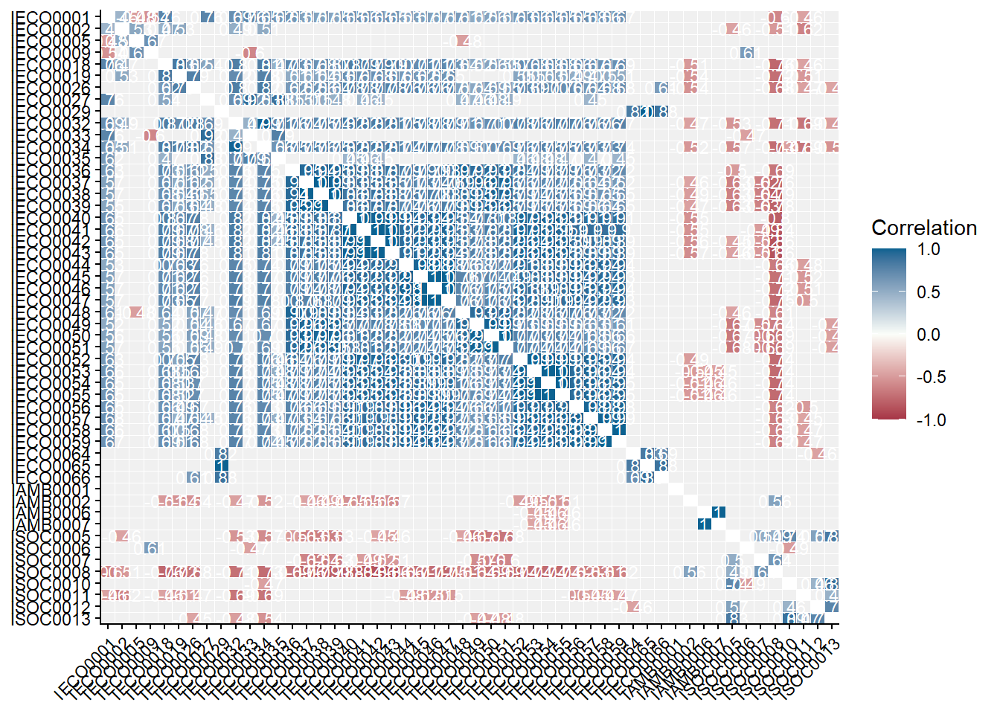
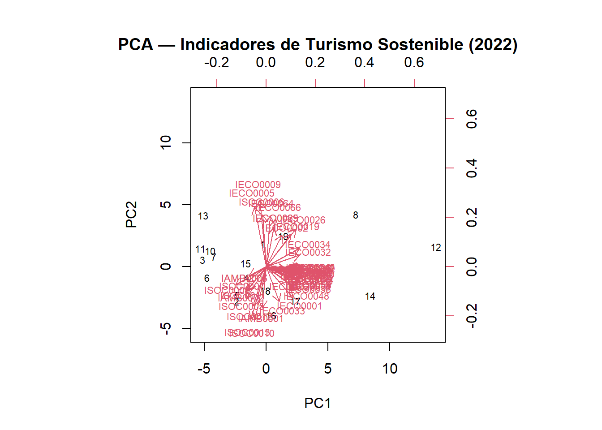
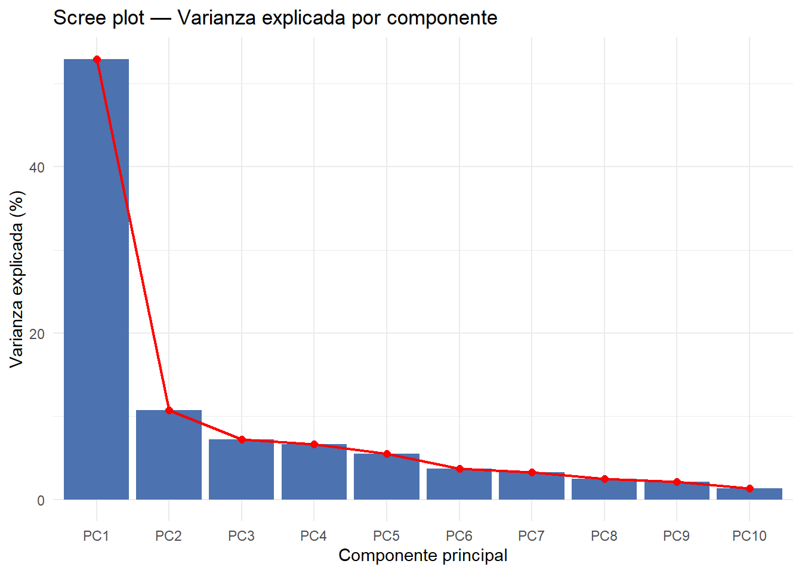
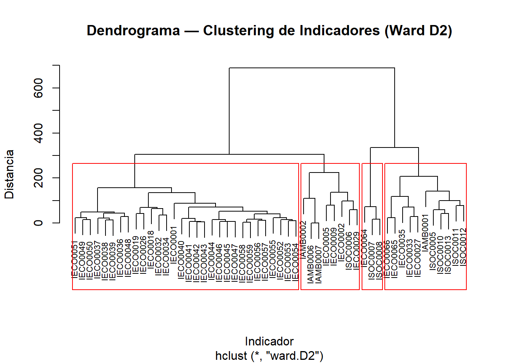
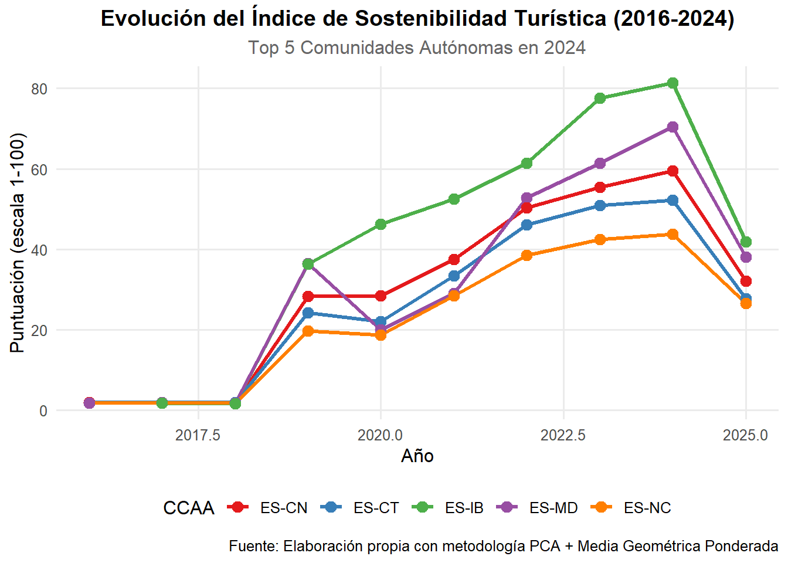
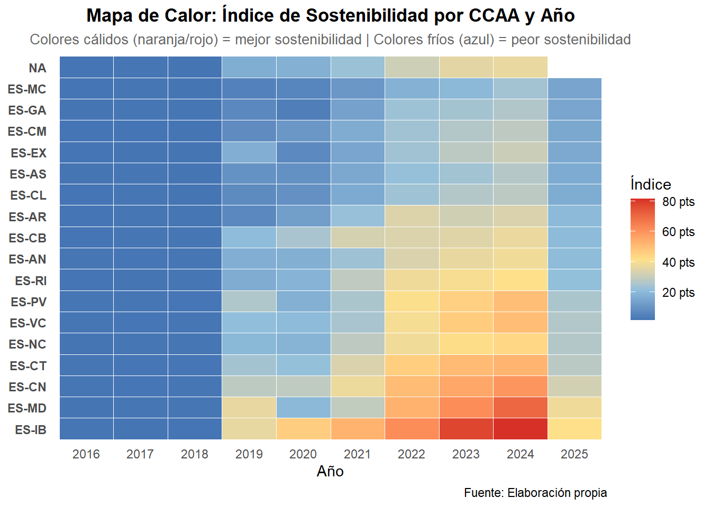
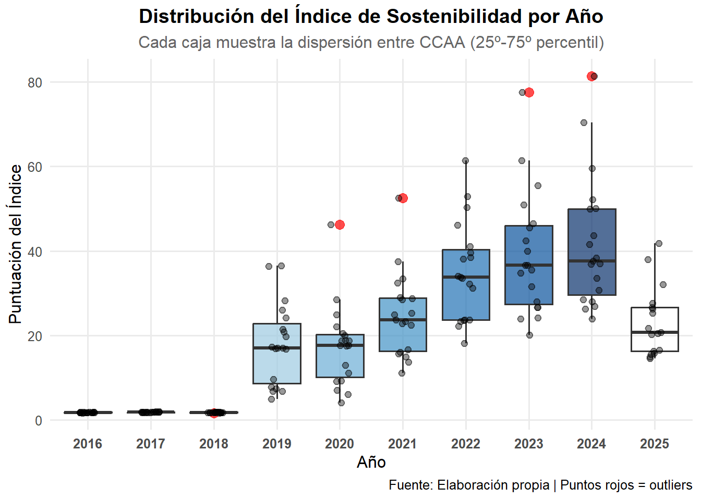
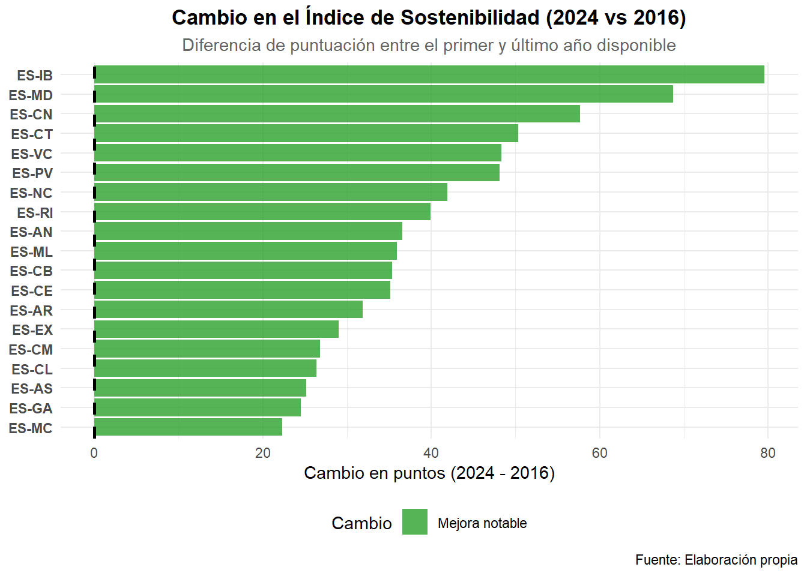
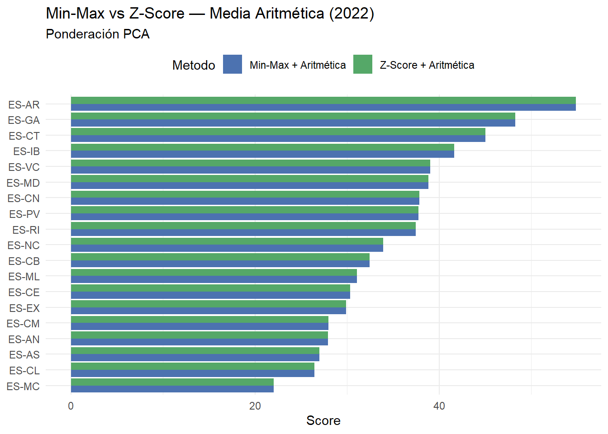

library(COINr)
library(dplyr)
library(tidyr)
library(lubridate)
library(ggplot2)
library(stringr)
library(Benchmarking)archivoFinal_ImpAmelia_con2020
# 1. Cargo datos
indicadores_calculados_final_ImpAmelia <- readRDS("~/MATEMÁTICAS URJC/CUARTO CURSO/TFG/tfg_composite_indicators/data/cindicators_ImpAmelia.rds")
indicators_ImpAmelia_meta_final <- readRDS("~/MATEMÁTICAS URJC/CUARTO CURSO/TFG/tfg_composite_indicators/data/indicators_ImpAmelia.rds")
df_indicadoresImpAmelia_completo_final <- readRDS("~/MATEMÁTICAS URJC/CUARTO CURSO/TFG/tfg_composite_indicators/data/df_indicadoresImpAmelia_completo.rds")
# 2. Renombro la columna valor y elimino source_id
indicadores_calculados_final_ImpAmelia <- indicadores_calculados_final_ImpAmelia |>
rename(value = indicator_value) |>
select(-source_id)
# 3. Verificación rápida
indicadores_activos_ImpAmelia <- indicadores_calculados_final_ImpAmelia %>%
mutate(Year = year(as.Date(date))) %>%
pull(indicator_id) %>%
unique()
print(paste("Indicadores detectados con datos:", length(indicadores_activos_ImpAmelia)))[1] "Indicadores detectados con datos: 58"iData
# Transformamos a formato ancho (iData)
iData_ImpAmelia <- indicadores_calculados_final_ImpAmelia %>%
mutate(Time = year(as.Date(date))) %>%
select(uCode = geo_id, Time, indicator_id, value) |>
pivot_wider(names_from = indicator_id, values_from = value)
# Paso los NaN a NA para tenerlo todo igual
iData_ImpAmelia[do.call(cbind, lapply(iData_ImpAmelia, is.nan))] <- NA
head(iData_ImpAmelia)# A tibble: 6 × 60
uCode Time IAMB0001 IAMB0002 IAMB0003 IAMB0004 IAMB0005 IAMB0006 IAMB0007
<chr> <dbl> <dbl> <dbl> <dbl> <dbl> <dbl> <dbl> <dbl>
1 ES-AN 2017 88.3 6.90 NA NA NA 79.7 20.3
2 ES-AR 2017 96.0 3.37 NA NA NA NA NA
3 ES-AS 2017 90.4 7.88 NA NA NA NA NA
4 ES-CB 2017 83.8 9.65 NA NA NA NA NA
5 ES-CE 2017 NA NA NA NA NA NA NA
6 ES-CL 2017 94.8 5.59 NA NA NA 18.5 81.5
# ℹ 51 more variables: IECO0001 <dbl>, IECO0002 <dbl>, IECO0005 <dbl>,
# IECO0009 <dbl>, IECO0012 <dbl>, IECO0013 <dbl>, IECO0018 <dbl>,
# IECO0019 <dbl>, IECO0026 <dbl>, IECO0027 <dbl>, IECO0029 <dbl>,
# IECO0032 <dbl>, IECO0033 <dbl>, IECO0034 <dbl>, IECO0035 <dbl>,
# IECO0036 <dbl>, IECO0037 <dbl>, IECO0038 <dbl>, IECO0039 <dbl>,
# IECO0040 <dbl>, IECO0041 <dbl>, IECO0042 <dbl>, IECO0043 <dbl>,
# IECO0044 <dbl>, IECO0045 <dbl>, IECO0046 <dbl>, IECO0047 <dbl>, …Para ver de cuántos indicadores tengo datos por región y por año.
# Obtenemos los años únicos ordenados
anios <- sort(unique(iData_ImpAmelia$Time))
for(anio in anios){
cat("\n--- Indicadores que tienen datos en el año:", anio, "---\n")
res <- iData_ImpAmelia %>%
filter(Time == anio) %>%
rowwise() %>%
mutate(datos_reales = sum(!is.na(c_across(-c(uCode, Time))))) %>%
select(uCode, datos_reales)
print(res)
}
--- Indicadores que tienen datos en el año: 2016 ---
# A tibble: 20 × 2
# Rowwise:
uCode datos_reales
<chr> <int>
1 ES-AN 19
2 ES-AR 17
3 ES-AS 17
4 ES-CB 16
5 ES-CE 10
6 ES-CL 17
7 ES-CM 17
8 ES-CN 19
9 ES-CT 19
10 ES-EX 17
11 ES-GA 19
12 ES-IB 17
13 ES-MC 17
14 ES-MD 19
15 ES-ML 10
16 ES-NC 16
17 ES-PV 19
18 ES-RI 17
19 ES-VC 19
20 ESP 21
--- Indicadores que tienen datos en el año: 2017 ---
# A tibble: 20 × 2
# Rowwise:
uCode datos_reales
<chr> <int>
1 ES-AN 20
2 ES-AR 18
3 ES-AS 18
4 ES-CB 18
5 ES-CE 10
6 ES-CL 20
7 ES-CM 18
8 ES-CN 19
9 ES-CT 20
10 ES-EX 18
11 ES-GA 20
12 ES-IB 20
13 ES-MC 18
14 ES-MD 20
15 ES-ML 10
16 ES-NC 18
17 ES-PV 20
18 ES-RI 18
19 ES-VC 20
20 ESP 21
--- Indicadores que tienen datos en el año: 2018 ---
# A tibble: 20 × 2
# Rowwise:
uCode datos_reales
<chr> <int>
1 ES-AN 19
2 ES-AR 19
3 ES-AS 17
4 ES-CB 17
5 ES-CE 10
6 ES-CL 17
7 ES-CM 17
8 ES-CN 19
9 ES-CT 19
10 ES-EX 17
11 ES-GA 19
12 ES-IB 19
13 ES-MC 17
14 ES-MD 19
15 ES-ML 10
16 ES-NC 17
17 ES-PV 19
18 ES-RI 17
19 ES-VC 19
20 ESP 21
--- Indicadores que tienen datos en el año: 2019 ---
# A tibble: 20 × 2
# Rowwise:
uCode datos_reales
<chr> <int>
1 ES-AN 49
2 ES-AR 42
3 ES-AS 47
4 ES-CB 46
5 ES-CE 11
6 ES-CL 47
7 ES-CM 47
8 ES-CN 51
9 ES-CT 49
10 ES-EX 26
11 ES-GA 49
12 ES-IB 49
13 ES-MC 47
14 ES-MD 49
15 ES-ML 11
16 ES-NC 49
17 ES-PV 49
18 ES-RI 39
19 ES-VC 49
20 ESP 53
--- Indicadores que tienen datos en el año: 2020 ---
# A tibble: 20 × 2
# Rowwise:
uCode datos_reales
<chr> <int>
1 ES-AN 45
2 ES-AR 37
3 ES-AS 44
4 ES-CB 37
5 ES-CE 10
6 ES-CL 44
7 ES-CM 42
8 ES-CN 49
9 ES-CT 45
10 ES-EX 30
11 ES-GA 44
12 ES-IB 45
13 ES-MC 38
14 ES-MD 45
15 ES-ML 10
16 ES-NC 43
17 ES-PV 42
18 ES-RI 35
19 ES-VC 44
20 ESP 55
--- Indicadores que tienen datos en el año: 2021 ---
# A tibble: 20 × 2
# Rowwise:
uCode datos_reales
<chr> <int>
1 ES-AN 52
2 ES-AR 47
3 ES-AS 50
4 ES-CB 43
5 ES-CE 10
6 ES-CL 50
7 ES-CM 50
8 ES-CN 53
9 ES-CT 52
10 ES-EX 50
11 ES-GA 50
12 ES-IB 50
13 ES-MC 43
14 ES-MD 52
15 ES-ML 10
16 ES-NC 49
17 ES-PV 50
18 ES-RI 41
19 ES-VC 52
20 ESP 55
--- Indicadores que tienen datos en el año: 2022 ---
# A tibble: 20 × 2
# Rowwise:
uCode datos_reales
<chr> <int>
1 ES-AN 52
2 ES-AR 44
3 ES-AS 50
4 ES-CB 42
5 ES-CE 10
6 ES-CL 50
7 ES-CM 50
8 ES-CN 54
9 ES-CT 52
10 ES-EX 50
11 ES-GA 52
12 ES-IB 52
13 ES-MC 43
14 ES-MD 52
15 ES-ML 10
16 ES-NC 50
17 ES-PV 50
18 ES-RI 46
19 ES-VC 52
20 ESP 56
--- Indicadores que tienen datos en el año: 2023 ---
# A tibble: 20 × 2
# Rowwise:
uCode datos_reales
<chr> <int>
1 ES-AN 51
2 ES-AR 43
3 ES-AS 49
4 ES-CB 49
5 ES-CE 10
6 ES-CL 49
7 ES-CM 49
8 ES-CN 52
9 ES-CT 51
10 ES-EX 49
11 ES-GA 51
12 ES-IB 49
13 ES-MC 44
14 ES-MD 51
15 ES-ML 10
16 ES-NC 49
17 ES-PV 49
18 ES-RI 49
19 ES-VC 51
20 ESP 54
--- Indicadores que tienen datos en el año: 2024 ---
# A tibble: 20 × 2
# Rowwise:
uCode datos_reales
<chr> <int>
1 ES-AN 51
2 ES-AR 45
3 ES-AS 49
4 ES-CB 49
5 ES-CE 10
6 ES-CL 49
7 ES-CM 49
8 ES-CN 49
9 ES-CT 51
10 ES-EX 49
11 ES-GA 51
12 ES-IB 49
13 ES-MC 49
14 ES-MD 51
15 ES-ML 10
16 ES-NC 49
17 ES-PV 49
18 ES-RI 48
19 ES-VC 51
20 ESP 51
--- Indicadores que tienen datos en el año: 2025 ---
# A tibble: 18 × 2
# Rowwise:
uCode datos_reales
<chr> <int>
1 ES-AN 32
2 ES-AR 31
3 ES-AS 32
4 ES-CB 29
5 ES-CL 32
6 ES-CM 32
7 ES-CN 32
8 ES-CT 32
9 ES-EX 32
10 ES-GA 32
11 ES-IB 32
12 ES-MC 32
13 ES-MD 32
14 ES-NC 32
15 ES-PV 32
16 ES-RI 31
17 ES-VC 32
18 ESP 32resumen_disponibilidad <- iData_ImpAmelia %>%
pivot_longer(cols = -c(uCode, Time), names_to = "indicador", values_to = "valor") %>%
group_by(Time, uCode) %>%
summarise(total_datos = sum(!is.na(valor)), .groups = "drop") %>%
pivot_wider(names_from = Time, values_from = total_datos)
# Esto te dará una matriz: Regiones en filas y Años en columnas
View(resumen_disponibilidad)estudiamos indicadores problemáticos
# 2. Calculamos Min y Max por cada indicador y cada año
# Quitamos uCode porque es texto y daría error
stats_ImpAmelia <- iData_ImpAmelia %>%
select(-uCode) %>%
group_by(Time) %>%
summarise(across(where(is.numeric), list(
min = ~min(.x, na.rm = TRUE),
max = ~max(.x, na.rm = TRUE)
), .names = "{.col}_{.fn}")) %>%
pivot_longer(
cols = -Time,
names_to = c("iCode", ".value"),
names_pattern = "(.*)_(.*)"
)
# 3. FILTRAR INDICADORES CONSTANTES
# Los que tienen Min == Max son los que darán NaN al normalizar
indicadores_con_problemas_ImpAmelia <- stats_ImpAmelia %>%
filter(min == max) %>%
select(Time, iCode, min, max)
# Ver el resultado
print(indicadores_con_problemas_ImpAmelia, n=100)# A tibble: 29 × 4
Time iCode min max
<dbl> <chr> <dbl> <dbl>
1 2016 IAMB0003 1790688. 1790688.
2 2016 IAMB0005 19.9 19.9
3 2017 IAMB0003 1871010. 1871010.
4 2018 IAMB0003 1944853. 1944853.
5 2018 IAMB0005 21.8 21.8
6 2019 IAMB0003 1894067. 1894067.
7 2019 IECO0012 94.9 94.9
8 2019 IECO0013 4.72 4.72
9 2019 ISOC0004 88.6 88.6
10 2020 IAMB0002 1.70 1.70
11 2020 IAMB0005 23.7 23.7
12 2020 IAMB0006 74.2 74.2
13 2020 IAMB0007 25.8 25.8
14 2020 IECO0001 134. 134.
15 2020 IECO0002 1045. 1045.
16 2020 IECO0005 7.82 7.82
17 2020 IECO0012 94.2 94.2
18 2020 IECO0013 3.89 3.89
19 2020 ISOC0004 83.0 83.0
20 2021 IECO0012 97.7 97.7
21 2021 IECO0013 3.94 3.94
22 2021 ISOC0004 87.8 87.8
23 2022 IAMB0005 28.0 28.0
24 2022 IECO0012 112. 112.
25 2022 IECO0013 4.14 4.14
26 2022 ISOC0004 91.6 91.6
27 2023 IECO0012 121. 121.
28 2023 IECO0013 4.38 4.38
29 2023 ISOC0004 91.8 91.8 # 4. LISTA ÚNICA DE NOMBRES (sin duplicados)
nombres_problematicos_ImpAmelia <- indicadores_con_problemas_ImpAmelia %>%
pull(iCode) %>%
unique()
# Imprimir la lista limpia
print("Indicadores a revisar:")[1] "Indicadores a revisar:"print(nombres_problematicos_ImpAmelia) [1] "IAMB0003" "IAMB0005" "IECO0012" "IECO0013" "ISOC0004" "IAMB0002"
[7] "IAMB0006" "IAMB0007" "IECO0001" "IECO0002" "IECO0005"[1] “Indicadores a revisar incluyendo 2020: nos dan problema 11 en total” [1] “IAMB0003” “IAMB0005” “IECO0012” “IECO0013” “ISOC0004” “IAMB0002” “IAMB0006” [8] “IAMB0007” “IECO0001” “IECO0002” “IECO0005”
EXCLUYENDO 2020: [1] “Indicadores a revisar: nos dan problema 5 en total (pero donde está IAMB0004? creo que tambien habría que eliminarlo pq no tiene datos” [1] “IAMB0003” “IAMB0005” “IECO0012” “IECO0013” “ISOC0004”
disponibilidad de datos por indicador
# Calculamos la disponibilidad_ImpAmelia
disponibilidad_ImpAmelia <- iData_ImpAmelia %>%
filter(uCode != "ESP") %>%
# Calculamos el % de datos no NA para cada columna (excepto uCode y Time)
summarise(across(-c(uCode, Time), ~ sum(!is.na(.x)) / n())) %>%
# Pasamos a formato largo para que sea una lista
pivot_longer(everything(), names_to = "iCode", values_to = "disponibilidad_ImpAmelia") %>%
# Lo multiplicamos por 100 para que sea porcentaje y redondeamos
mutate(disponibilidad_ImpAmelia_Pct = round(disponibilidad_ImpAmelia * 100, 2)) %>%
# Ordenamos para ver primero los que tienen menos datos
arrange(disponibilidad_ImpAmelia_Pct)
# Imprimimos la tabla completa
df_disponibilidad_ImpAmelia_datos <- as.data.frame(disponibilidad_ImpAmelia)
View(df_disponibilidad_ImpAmelia_datos)
indicadores_a_mantener_ImpAmelia <- disponibilidad_ImpAmelia |> filter(disponibilidad_ImpAmelia_Pct>=20) |> pull(iCode)
#vemos cuales hemos eliminado:
eliminados_ImpAmelia <- disponibilidad_ImpAmelia |> filter(disponibilidad_ImpAmelia_Pct<20) |> pull(iCode)
print(paste("Indicadores eliminados_ImpAmelia por baja disponibilidad_ImpAmelia:", length(eliminados_ImpAmelia)))[1] "Indicadores eliminados_ImpAmelia por baja disponibilidad_ImpAmelia: 6"print(eliminados_ImpAmelia)[1] "IAMB0004" "IAMB0003" "IAMB0005" "IECO0012" "IECO0013" "ISOC0004"Con el filtro de eliminar los pct<20 [1] “Indicadores eliminados_ImpAmelia por baja disponibilidad_ImpAmelia incluyendo el año 2020 : 10” [1] “IAMB0004” “IECO0012” “IECO0013” “ISOC0004” “IAMB0005” “IAMB0003” “IAMB0002” [8] “IAMB0006” “IAMB0007” “IAMB0001”
[1] “Indicadores eliminados_ImpAmelia por baja disponibilidad_ImpAmelia excluyendo el año 2020 : 9. salvo a IAMB0002” [1] “IAMB0004” “IAMB0005” “IAMB0003” “IECO0012” “IECO0013” “ISOC0004” “IAMB0006” [8] “IAMB0007” “IAMB0001”
Eliminamos indicadores con baja disponibilidad
# Indicadores a eliminar (baja disponibilidad excluyendo 2020)
indicadores_eliminar <- c("IAMB0004", "IAMB0005", "IAMB0003", "IECO0012",
"IECO0013", "ISOC0004")
# Filtramos iData eliminando esos indicadores
iData_clean <- iData_ImpAmelia %>%
select(-any_of(indicadores_eliminar))
# Verificación
print(paste("Indicadores restantes:", ncol(iData_clean) - 2)) # -2 por uCode y Time[1] "Indicadores restantes: 52"iMeta
df <- indicators_ImpAmelia_meta_final %>%
select(-any_of("dimension_id")) %>%
left_join(
df_indicadoresImpAmelia_completo_final %>%
select(indicator_id, dimension_id) %>%
distinct(),
by = "indicator_id"
)
# --- NIVEL 1: INDICADORES ---
iMeta_L1 <- df %>%
select(
iCode = indicator_id,
iName = indicator_original_name,
Parent = dimension_id,
Direction = indicator_direction,
Weight = indicator_weight
) %>%
distinct(iCode, .keep_all = TRUE) %>%
# Filtramos los eliminados por baja disponibilidad
filter(!iCode %in% indicadores_eliminar) %>%
mutate(
Direction = ifelse(Direction == "+", 1, -1),
Level = 1,
Type = "Indicator"
)
# --- NIVEL 2: DIMENSIONES ---
iMeta_L2 <- iMeta_L1 %>%
select(iCode = Parent) %>%
distinct() %>%
mutate(
iName = paste("Dimensión:", iCode),
Level = 2,
Parent = "TotalIndex",
Direction = 1,
Weight = 1,
Type = "Aggregate"
)
# --- NIVEL 3: ÍNDICE FINAL ---
iMeta_L3 <- data.frame(
iCode = "TotalIndex",
iName = "Índice Sintético Regional",
Level = 3,
Parent = NA,
Direction = 1,
Weight = 1,
Type = "Aggregate"
)
# --- UNIÓN FINAL ---
iMeta <- bind_rows(iMeta_L1, iMeta_L2, iMeta_L3)
glimpse(iMeta)Rows: 56
Columns: 7
$ iCode <chr> "IECO0001", "IECO0002", "IAMB0001", "IECO0005", "IAMB0002", …
$ iName <chr> "Gasto medio por turista receptor y día", "Gasto medio por t…
$ Parent <chr> "ECO", "ECO", "ENV", "ECO", "ENV", "ENV", "ENV", "ECO", "SOC…
$ Direction <dbl> 1, 1, 1, 1, 1, -1, 1, 1, 1, 1, 1, 1, 1, 1, 1, 1, 1, 1, 1, 1,…
$ Weight <dbl> 1, 1, 1, 1, 1, 1, 1, 1, 1, 1, 1, 1, 1, 1, 1, 1, 1, 1, 1, 1, …
$ Level <dbl> 1, 1, 1, 1, 1, 1, 1, 1, 1, 1, 1, 1, 1, 1, 1, 1, 1, 1, 1, 1, …
$ Type <chr> "Indicator", "Indicator", "Indicator", "Indicator", "Indicat…creamos el purse
purse <- new_coin(
iData = iData_clean,
iMeta = iMeta,
split_to = "all",
quietly = TRUE
)
purse-----------------------------
A purse with... 10 coins
-----------------------------
Time n_Units n_Inds n_dsets
2016 20 52 1
2017 20 52 1
2018 20 52 1
2019 20 52 1
2020 20 52 1
2021 20 52 1
2022 20 52 1
2023 20 52 1
2024 20 52 1
2025 18 52 1
-----------------------------------
Sample from first coin (2016):
-----------------------------------
Input:
Units: 20 (ES-AN, ES-AR, ES-AS, ...)
Indicators: 52 (IECO0001, IECO0002, IECO0005, ...)
Denominators: 0 ()
Groups: 0 (none)
Structure:
Level 1 : 52 indicators (IECO0001, IECO0002, IECO0005, ...)
Level 2 : 3 groups (ECO, ENV, SOC)
Level 3 : 1 groups (TotalIndex)
Data sets:
Raw (20 units)imputacion purse
# Imputamos por la mediana antes de normalizar
purse <- Impute(
purse,
dset = "Raw",
f_i = "i_median"
)grafico distribucion indicador x por año (ejemplo)
library(ggplot2)
library(dplyr)
library(tidyr)
# 1. Sacamos los datos limpios de todo el panel
df_imputed <- get_dset(purse, dset = "Imputed")
# 2. Elegimos el indicador que queremos "investigar" (ej. IECO0033)
df_imputed %>%
select(uCode, Time, IECO0033) %>%
# 3. Hacemos un diagrama de densidad (como un histograma suavizado) para ver la "cola"
ggplot(aes(x = IECO0033, fill = as.factor(Time))) +
geom_density(alpha = 0.4) + # Alpha le da transparencia para ver los años superpuestos
theme_minimal() +
labs(
title = "Distribución del indicador IECO0033 (Todos los años)",
subtitle = "Viendo la asimetría y los valores extremos",
x = "Valor del Indicador",
y = "Densidad",
fill = "Año"
)
outliers
# ============================================================
# ANÁLISIS DE ASIMETRÍA Y CURTOSIS (CORREGIDO)
# ============================================================
# 1. Extraemos el dataset del purse
df_imputed <- get_dset(purse, dset = "Imputed")
# 2. Seleccionamos SOLO las columnas numéricas (los indicadores)
# Quitamos uCode y Time para que no dé error
df_numeric <- df_imputed %>% select(-uCode, -Time)
# 3. Ahora sí, calculamos las estadísticas sobre los números
stats_indicators <- get_stats(df_numeric, out2 = "df")
# 4. Filtramos los indicadores problemáticos (|Skew| > 2 o Kurtosis > 3.5)
indicadores_problematicos <- stats_indicators %>%
select(iCode, Skew, Kurt) %>%
filter(abs(Skew) > 2 | Kurt > 3.5) %>%
arrange(desc(abs(Skew)))
# 5. Resultado
if(nrow(indicadores_problematicos) > 0) {
message("¡Detectados! Estos indicadores tienen outliers que 'rompen' la normalización:")
print(indicadores_problematicos)
} else {
message("Increíble, pero tus indicadores están todos dentro de los umbrales normales.")
} iCode Skew Kurt
1 ISOC0007 -4.600 24.40
2 ISOC0008 -4.400 21.30
3 IAMB0006 -2.080 4.96
4 IAMB0007 2.080 4.96
5 IAMB0001 -2.040 6.11
6 IAMB0002 1.850 5.81
7 IECO0027 0.909 4.87
8 IECO0033 -0.171 4.30#bajamos al dato:
# Volvemos al dataset original con identificadores
df_long <- df_imputed %>%
pivot_longer(
cols = -c(uCode, Time),
names_to = "iCode",
values_to = "value"
)
# Calculamos z-score por indicador
df_outliers <- df_long %>%
group_by(iCode) %>%
mutate(
z = (value - mean(value, na.rm = TRUE)) / sd(value, na.rm = TRUE)
) %>%
ungroup() %>%
filter(abs(z) > 3) # umbral típico
# Resultado
print(df_outliers, n=74)# A tibble: 98 × 5
Time uCode iCode value z
<dbl> <chr> <chr> <dbl> <dbl>
1 2016 ES-EX IAMB0002 13.0 4.77
2 2017 ES-CB IAMB0002 9.65 3.20
3 2017 ES-CL IAMB0006 18.5 -4.11
4 2017 ES-CL IAMB0007 81.5 4.11
5 2018 ES-CB IAMB0002 13.5 5.03
6 2019 ES-CN ISOC0008 84.6 -5.41
7 2019 ES-CN ISOC0012 47.8 -3.23
8 2019 ES-IB ISOC0008 81.6 -6.51
9 2019 ES-MD IECO0001 271. 3.31
10 2019 ES-MD ISOC0008 89.9 -3.44
11 2019 ES-NC IAMB0006 24.1 -3.70
12 2019 ES-NC IAMB0007 75.9 3.70
13 2020 ES-CT IECO0033 -22.4 -3.03
14 2020 ES-GA IECO0009 5.91 3.24
15 2020 ES-MD ISOC0007 90.5 -4.70
16 2020 ES-MD IECO0033 -28.8 -3.78
17 2021 ES-AR IAMB0006 26.9 -3.50
18 2021 ES-AR IAMB0007 73.1 3.50
19 2021 ES-MC IAMB0001 72.7 -4.11
20 2022 ES-CN IECO0019 3.94 3.21
21 2022 ES-CT IECO0033 31.3 3.25
22 2022 ES-CT IECO0035 118. 3.13
23 2022 ES-CT IECO0027 24.4 3.77
24 2022 ES-GA IAMB0006 29.3 -3.32
25 2022 ES-GA IAMB0007 70.7 3.32
26 2022 ES-IB IECO0066 7.11 3.06
27 2022 ES-MC IAMB0001 72.2 -4.21
28 2022 ES-MD IECO0001 281. 3.56
29 2022 ES-MD IECO0033 42.9 4.60
30 2022 ES-MD IECO0035 122. 3.26
31 2022 ES-MD IECO0027 31.5 5.10
32 2023 ES-AS ISOC0006 56.7 -3.11
33 2023 ES-IB ISOC0007 92.4 -3.69
34 2023 ES-IB IECO0019 4.10 3.50
35 2023 ES-IB IECO0042 184 3.02
36 2023 ES-IB IECO0043 186. 3.03
37 2023 ES-IB IECO0045 136. 3.11
38 2023 ES-IB IECO0046 137. 3.10
39 2023 ES-IB IECO0047 136. 3.13
40 2023 ES-IB IECO0026 172. 3.52
41 2023 ES-MC ISOC0006 55.1 -3.55
42 2023 ES-MD IECO0001 293. 3.85
43 2024 ES-CN IECO0032 135. 3.18
44 2024 ES-CN IECO0034 114. 3.55
45 2024 ES-CN IECO0026 170. 3.41
46 2024 ES-GA IAMB0006 32.5 -3.09
47 2024 ES-GA IAMB0007 67.5 3.09
48 2024 ES-IB ISOC0007 85.8 -7.17
49 2024 ES-IB ISOC0008 88.0 -4.14
50 2024 ES-IB IECO0018 0.996 3.33
51 2024 ES-IB IECO0019 4.62 4.38
52 2024 ES-IB IECO0040 186. 3.26
53 2024 ES-IB IECO0042 194. 3.39
54 2024 ES-IB IECO0043 195. 3.38
55 2024 ES-IB IECO0044 140. 3.29
56 2024 ES-IB IECO0045 143. 3.49
57 2024 ES-IB IECO0046 144. 3.53
58 2024 ES-IB IECO0047 144. 3.57
59 2024 ES-IB IECO0052 197. 3.07
60 2024 ES-IB IECO0053 204. 3.12
61 2024 ES-IB IECO0054 208 3.15
62 2024 ES-IB IECO0056 147. 3.02
63 2024 ES-IB IECO0057 152. 3.12
64 2024 ES-IB IECO0058 156. 3.20
65 2024 ES-IB IECO0059 157. 3.12
66 2024 ES-IB IECO0041 191. 3.34
67 2024 ES-IB IECO0026 185. 4.17
68 2024 ES-MD IECO0001 306. 4.18
69 2024 ES-MD IECO0002 1825. 3.24
70 2024 ES-MD ISOC0007 93.2 -3.27
71 2024 ES-MD IECO0018 0.978 3.20
72 2024 ES-MD IECO0032 135. 3.19
73 2024 ES-MD IECO0038 396. 3.16
74 2024 ES-MD IECO0039 410. 3.36
# ℹ 24 more rowstratamos (para suavizar valores extremos)
purse<- Treat(
purse,
dset = "Imputed",
f_t = "winsorise",
f_t_para = list(na.rm = TRUE,
winmax = 3,
skew_thresh = 2,
kurt_thresh = 3.5,
force_win = TRUE), # Winmax suele estar entre 3 y 5
disable = FALSE
)df_before <- get_dset(purse, "Imputed")
df_after <- get_dset(purse, "Treated")
library(dplyr)
comparacion <- df_outliers %>%
select(uCode, Time, iCode) %>%
left_join(
df_before %>%
pivot_longer(-c(uCode, Time), names_to = "iCode", values_to = "before"),
by = c("uCode", "Time", "iCode")
) %>%
left_join(
df_after %>%
pivot_longer(-c(uCode, Time), names_to = "iCode", values_to = "after"),
by = c("uCode", "Time", "iCode")
)
print(comparacion,n=74)# A tibble: 98 × 5
uCode Time iCode before after
<chr> <dbl> <chr> <dbl> <dbl>
1 ES-EX 2016 IAMB0002 13.0 13.0
2 ES-CB 2017 IAMB0002 9.65 9.65
3 ES-CL 2017 IAMB0006 18.5 18.5
4 ES-CL 2017 IAMB0007 81.5 81.5
5 ES-CB 2018 IAMB0002 13.5 5.91
6 ES-CN 2019 ISOC0008 84.6 84.6
7 ES-CN 2019 ISOC0012 47.8 47.8
8 ES-IB 2019 ISOC0008 81.6 81.6
9 ES-MD 2019 IECO0001 271. 271.
10 ES-MD 2019 ISOC0008 89.9 89.9
11 ES-NC 2019 IAMB0006 24.1 24.1
12 ES-NC 2019 IAMB0007 75.9 75.9
13 ES-CT 2020 IECO0033 -22.4 -22.4
14 ES-GA 2020 IECO0009 5.91 5.91
15 ES-MD 2020 ISOC0007 90.5 90.5
16 ES-MD 2020 IECO0033 -28.8 -28.8
17 ES-AR 2021 IAMB0006 26.9 57.7
18 ES-AR 2021 IAMB0007 73.1 42.3
19 ES-MC 2021 IAMB0001 72.7 88.4
20 ES-CN 2022 IECO0019 3.94 3.94
21 ES-CT 2022 IECO0033 31.3 31.3
22 ES-CT 2022 IECO0035 118. 118.
23 ES-CT 2022 IECO0027 24.4 24.4
24 ES-GA 2022 IAMB0006 29.3 39.0
25 ES-GA 2022 IAMB0007 70.7 61.0
26 ES-IB 2022 IECO0066 7.11 7.11
27 ES-MC 2022 IAMB0001 72.2 85.0
28 ES-MD 2022 IECO0001 281. 281.
29 ES-MD 2022 IECO0033 42.9 42.9
30 ES-MD 2022 IECO0035 122. 122.
31 ES-MD 2022 IECO0027 31.5 31.5
32 ES-AS 2023 ISOC0006 56.7 63.8
33 ES-IB 2023 ISOC0007 92.4 98.8
34 ES-IB 2023 IECO0019 4.10 4.10
35 ES-IB 2023 IECO0042 184 184
36 ES-IB 2023 IECO0043 186. 186.
37 ES-IB 2023 IECO0045 136. 136.
38 ES-IB 2023 IECO0046 137. 137.
39 ES-IB 2023 IECO0047 136. 136.
40 ES-IB 2023 IECO0026 172. 172.
41 ES-MC 2023 ISOC0006 55.1 63.8
42 ES-MD 2023 IECO0001 293. 293.
43 ES-CN 2024 IECO0032 135. 135.
44 ES-CN 2024 IECO0034 114. 114.
45 ES-CN 2024 IECO0026 170. 170.
46 ES-GA 2024 IAMB0006 32.5 69.7
47 ES-GA 2024 IAMB0007 67.5 30.3
48 ES-IB 2024 ISOC0007 85.8 99.7
49 ES-IB 2024 ISOC0008 88.0 99.5
50 ES-IB 2024 IECO0018 0.996 0.996
51 ES-IB 2024 IECO0019 4.62 4.62
52 ES-IB 2024 IECO0040 186. 186.
53 ES-IB 2024 IECO0042 194. 194.
54 ES-IB 2024 IECO0043 195. 195.
55 ES-IB 2024 IECO0044 140. 140.
56 ES-IB 2024 IECO0045 143. 143.
57 ES-IB 2024 IECO0046 144. 144.
58 ES-IB 2024 IECO0047 144. 144.
59 ES-IB 2024 IECO0052 197. 197.
60 ES-IB 2024 IECO0053 204. 204.
61 ES-IB 2024 IECO0054 208 208
62 ES-IB 2024 IECO0056 147. 147.
63 ES-IB 2024 IECO0057 152. 152.
64 ES-IB 2024 IECO0058 156. 156.
65 ES-IB 2024 IECO0059 157. 157.
66 ES-IB 2024 IECO0041 191. 191.
67 ES-IB 2024 IECO0026 185. 185.
68 ES-MD 2024 IECO0001 306. 306.
69 ES-MD 2024 IECO0002 1825. 1825.
70 ES-MD 2024 ISOC0007 93.2 99.7
71 ES-MD 2024 IECO0018 0.978 0.978
72 ES-MD 2024 IECO0032 135. 135.
73 ES-MD 2024 IECO0038 396. 396.
74 ES-MD 2024 IECO0039 410. 410.
# ℹ 24 more rows#estos son los que ha tratado la funcion Treat()
comparacion %>% filter(before != after)# A tibble: 15 × 5
uCode Time iCode before after
<chr> <dbl> <chr> <dbl> <dbl>
1 ES-CB 2018 IAMB0002 13.5 5.91
2 ES-AR 2021 IAMB0006 26.9 57.7
3 ES-AR 2021 IAMB0007 73.1 42.3
4 ES-MC 2021 IAMB0001 72.7 88.4
5 ES-GA 2022 IAMB0006 29.3 39.0
6 ES-GA 2022 IAMB0007 70.7 61.0
7 ES-MC 2022 IAMB0001 72.2 85.0
8 ES-AS 2023 ISOC0006 56.7 63.8
9 ES-IB 2023 ISOC0007 92.4 98.8
10 ES-MC 2023 ISOC0006 55.1 63.8
11 ES-GA 2024 IAMB0006 32.5 69.7
12 ES-GA 2024 IAMB0007 67.5 30.3
13 ES-IB 2024 ISOC0007 85.8 99.7
14 ES-IB 2024 ISOC0008 88.0 99.5
15 ES-MD 2024 ISOC0007 93.2 99.7 normalizamos
purse <- Normalise(
purse,
dset = "Treated",
normalise_by = "all",
f_n = "n_minmax",
f_n_para = list(l_u = c(1, 100))
)ANÁLISIS MULTIVARIANTE
correlaciones
coin_2022 <- purse$coin[[which(purse$Time == 2022)]]
plot_corr(
coin_2022,
dset = "Normalised",
grouplev = 3, #ojo, sale diferente cn 2 que con 3, mirar bien que significa
flagging = TRUE,
cortype = "pearson"
)
pca para 1 año NO SE PARA QUE SIRVE ESTE ENTONCES
# Extraemos todos los años del purse en un solo df normalizado
df_norm <- get_dset(coin_2022, dset = "Normalised") %>%
filter(uCode != "ESP")
# Preparamos para PCA: solo columnas numéricas de indicadores
df_pca <- df_norm %>%
select(-uCode) %>%
select(where(is.numeric))
pca_result <- prcomp(df_pca, center = TRUE, scale. = TRUE)
summary(pca_result)Importance of components:
PC1 PC2 PC3 PC4 PC5 PC6 PC7
Standard deviation 5.2478 2.3585 1.93405 1.85968 1.69303 1.38009 1.31065
Proportion of Variance 0.5296 0.1070 0.07193 0.06651 0.05512 0.03663 0.03303
Cumulative Proportion 0.5296 0.6366 0.70851 0.77502 0.83014 0.86677 0.89980
PC8 PC9 PC10 PC11 PC12 PC13 PC14
Standard deviation 1.13480 1.05406 0.84282 0.78071 0.72075 0.60840 0.48084
Proportion of Variance 0.02477 0.02137 0.01366 0.01172 0.00999 0.00712 0.00445
Cumulative Proportion 0.92457 0.94593 0.95959 0.97132 0.98131 0.98842 0.99287
PC15 PC16 PC17 PC18 PC19
Standard deviation 0.40257 0.30153 0.25927 0.22487 2.11e-15
Proportion of Variance 0.00312 0.00175 0.00129 0.00097 0.00e+00
Cumulative Proportion 0.99599 0.99773 0.99903 1.00000 1.00e+00biplot(pca_result, scale = 0, cex = 0.7,
main = "PCA — Indicadores de Turismo Sostenible (2022)")
varianza explicada pca
varianza_explicada <- summary(pca_result)$importance[2, ]
tibble(
PC = factor(paste0("PC", seq_along(varianza_explicada)),
levels = paste0("PC", seq_along(varianza_explicada))),
Var = varianza_explicada * 100
) %>%
slice_head(n = 10) %>%
ggplot(aes(x = PC, y = Var)) +
geom_col(fill = "#4C72B0") +
geom_line(aes(group = 1), color = "red", linewidth = 0.8) +
geom_point(color = "red", size = 2) +
labs(title = "Scree plot — Varianza explicada por componente",
x = "Componente principal", y = "Varianza explicada (%)") +
theme_minimal()
clustering jerarquico
# Transponemos: ahora las filas son indicadores y las columnas son observaciones
df_pca_t <- t(df_pca)
dist_matrix_ind <- dist(df_pca_t, method = "euclidean")
hclust_ind <- hclust(dist_matrix_ind, method = "ward.D2")
plot(hclust_ind,
main = "Dendrograma — Clustering de Indicadores (Ward D2)",
xlab = "Indicador", ylab = "Distancia",
cex = 0.7)
k_ind <- 4
rect.hclust(hclust_ind, k = k_ind, border = "red")
clusters_ind <- cutree(hclust_ind, k = k_ind)
df_clusters_ind <- tibble(
iCode = names(clusters_ind),
Cluster = factor(clusters_ind)
)
print(df_clusters_ind %>% arrange(Cluster), n=100)# A tibble: 52 × 2
iCode Cluster
<chr> <fct>
1 IECO0001 1
2 IECO0018 1
3 IECO0019 1
4 IECO0032 1
5 IECO0034 1
6 IECO0036 1
7 IECO0037 1
8 IECO0038 1
9 IECO0039 1
10 IECO0040 1
11 IECO0042 1
12 IECO0043 1
13 IECO0044 1
14 IECO0045 1
15 IECO0046 1
16 IECO0047 1
17 IECO0048 1
18 IECO0049 1
19 IECO0050 1
20 IECO0051 1
21 IECO0052 1
22 IECO0053 1
23 IECO0054 1
24 IECO0055 1
25 IECO0056 1
26 IECO0057 1
27 IECO0058 1
28 IECO0059 1
29 IECO0041 1
30 IECO0026 1
31 IECO0002 2
32 IECO0005 2
33 IAMB0002 2
34 IAMB0006 2
35 IAMB0007 2
36 IECO0009 2
37 ISOC0006 2
38 IECO0029 2
39 IAMB0001 3
40 ISOC0005 3
41 ISOC0010 3
42 IECO0033 3
43 IECO0035 3
44 ISOC0011 3
45 ISOC0012 3
46 IECO0027 3
47 ISOC0013 3
48 IECO0066 3
49 IECO0065 3
50 ISOC0007 4
51 ISOC0008 4
52 IECO0064 4 reducimos indicadores ALTAMENTE correlacionados
library(caret)
# Extraemos indicadores de ECO con todos los años apilados
df_norm_todos <- get_dset(purse, dset = "Normalised") %>%
filter(uCode != "ESP") %>%
select(-uCode, -Time) %>%
select(where(is.numeric)) %>%
mutate(across(everything(), ~ ifelse(is.na(.x), mean(.x, na.rm = TRUE), .x)))
df_eco <- df_norm_todos %>%
select(any_of(iMeta %>% filter(Parent == "ECO") %>% pull(iCode)))
# Matriz de correlaciones
cor_eco <- cor(df_eco, use = "pairwise.complete.obs")
print(paste("Pares con correlación > 0.95:", sum(abs(cor_eco[upper.tri(cor_eco)]) > 0.95)))[1] "Pares con correlación > 0.95: 66"# Detectamos y eliminamos redundantes
redundantes_eco <- findCorrelation(cor_eco, cutoff = 0.9, names = TRUE)
print(paste("Indicadores redundantes en ECO (cutoff 0.9):", length(redundantes_eco)))[1] "Indicadores redundantes en ECO (cutoff 0.9): 23"print(redundantes_eco) [1] "IECO0042" "IECO0054" "IECO0043" "IECO0046" "IECO0041" "IECO0047"
[7] "IECO0053" "IECO0045" "IECO0058" "IECO0040" "IECO0044" "IECO0057"
[13] "IECO0052" "IECO0055" "IECO0050" "IECO0038" "IECO0039" "IECO0048"
[19] "IECO0037" "IECO0049" "IECO0032" "IECO0066" "IECO0027"df_eco_reducido <- df_eco %>% select(-any_of(redundantes_eco))
indicadores_eco_finales <- names(df_eco_reducido)
print(paste("Indicadores ECO tras limpieza:", length(indicadores_eco_finales)))[1] "Indicadores ECO tras limpieza: 17"print(indicadores_eco_finales) [1] "IECO0001" "IECO0002" "IECO0005" "IECO0009" "IECO0018" "IECO0019"
[7] "IECO0033" "IECO0034" "IECO0035" "IECO0036" "IECO0051" "IECO0056"
[13] "IECO0059" "IECO0026" "IECO0065" "IECO0064" "IECO0029"pca que me da distintos pesos para indicadores individuales
library(purrr)
dimensiones <- iMeta %>%
filter(Level == 1) %>%
pull(Parent) %>%
unique()
pesos_pca_L1 <- map_df(dimensiones, function(dim) {
inds_dim <- iMeta %>%
filter(Level == 1, Parent == dim) %>%
pull(iCode)
df_dim <- df_norm_todos %>%
select(any_of(inds_dim)) %>%
{ if (dim == "ECO") select(., any_of(indicadores_eco_finales)) else . } %>%
select(where(~ var(.x, na.rm = TRUE) > 1e-10))
if (ncol(df_dim) < 2) return(NULL)
pca_dim <- prcomp(df_dim, center = TRUE, scale. = TRUE)
# Usamos solo PC1: los loadings absolutos del primer componente
loadings_pc1 <- abs(pca_dim$rotation[, 1])
pesos_norm <- loadings_pc1 / sum(loadings_pc1)
# Diagnóstico: varianza explicada por PC1
var_pc1 <- pca_dim$sdev[1]^2 / sum(pca_dim$sdev^2)
message("Dimensión ", dim, " — Varianza explicada PC1: ", round(var_pc1 * 100, 1), "%")
tibble(
iCode = colnames(df_dim),
Parent = dim,
Weight_PCA = round(pesos_norm, 4)
)
})
print(pesos_pca_L1 %>% arrange(Parent, desc(Weight_PCA)), n = 60)# A tibble: 29 × 3
iCode Parent Weight_PCA
<chr> <chr> <dbl>
1 IECO0018 ECO 0.0838
2 IECO0026 ECO 0.08
3 IECO0034 ECO 0.0784
4 IECO0019 ECO 0.07
5 IECO0059 ECO 0.068
6 IECO0056 ECO 0.0667
7 IECO0001 ECO 0.065
8 IECO0036 ECO 0.0633
9 IECO0065 ECO 0.0626
10 IECO0051 ECO 0.0607
11 IECO0064 ECO 0.0607
12 IECO0029 ECO 0.0593
13 IECO0033 ECO 0.0568
14 IECO0002 ECO 0.0493
15 IECO0035 ECO 0.0378
16 IECO0009 ECO 0.0187
17 IECO0005 ECO 0.0186
18 IAMB0006 ENV 0.395
19 IAMB0007 ENV 0.395
20 IAMB0001 ENV 0.162
21 IAMB0002 ENV 0.048
22 ISOC0013 SOC 0.197
23 ISOC0010 SOC 0.184
24 ISOC0012 SOC 0.180
25 ISOC0005 SOC 0.168
26 ISOC0011 SOC 0.126
27 ISOC0008 SOC 0.0821
28 ISOC0007 SOC 0.0437
29 ISOC0006 SOC 0.0189# Score de cada dimensión = media ponderada de sus indicadores con pesos PCA L1
df_scores_dim <- map_df(dimensiones, function(dim) {
inds_dim <- pesos_pca_L1 %>%
filter(Parent == dim) %>%
pull(iCode)
pesos_dim <- pesos_pca_L1 %>%
filter(Parent == dim) %>%
pull(Weight_PCA)
df_dim <- df_norm_todos %>%
select(any_of(inds_dim))
score <- as.vector(as.matrix(df_dim) %*% pesos_dim)
tibble(dimension = dim, score = score, obs = seq_len(nrow(df_dim)))
}) %>%
pivot_wider(names_from = dimension, values_from = score, id_cols = obs) %>%
select(-obs)
# PCA sobre los scores de las 3 dimensiones — solo PC1
pca_L2 <- prcomp(df_scores_dim, center = TRUE, scale. = TRUE)
var_pc1_L2 <- pca_L2$sdev[1]^2 / sum(pca_L2$sdev^2)
message("Varianza explicada PC1 nivel dimensiones: ", round(var_pc1_L2 * 100, 1), "%")
loadings_L2 <- abs(pca_L2$rotation[, 1])
pesos_L2_norm <- loadings_L2 / sum(loadings_L2)
df_pesos_L2 <- tibble(
iCode = dimensiones,
Weight_PCA = round(pesos_L2_norm, 4)
)
print(df_pesos_L2)# A tibble: 3 × 2
iCode Weight_PCA
<chr> <dbl>
1 ECO 0.497
2 ENV 0.498
3 SOC 0.0045# ============================================================
# ACTUALIZAR iMeta con pesos PCA (Nivel 1 y Nivel 2)
# ============================================================
# - Nivel 1: Pesos PCA para cada indicador individual dentro de su dimensión
# - Nivel 2: Pesos PCA para las 3 dimensiones (AMB, ECO, SOC) del índice final
# 1. Unimos los pesos de Nivel 1 (indicadores) y Nivel 2 (dimensiones)
iMeta_PCA <- iMeta %>%
# Pesos PCA para indicadores individuales (Nivel 1)
left_join(
pesos_pca_L1%>% select(iCode, Weight_PCA),
by = "iCode"
) %>%
rename(Weight_PCA_L1 = Weight_PCA) %>%
# Pesos PCA para las 3 dimensiones (Nivel 2)
left_join(
df_pesos_L2%>% select(iCode, Weight_PCA),
by = "iCode"
) %>%
rename(Weight_PCA_L2 = Weight_PCA) %>%
# 2. Asignamos los pesos definitivos
mutate(
Weight = case_when(
Level == 1 & !is.na(Weight_PCA_L1) ~ Weight_PCA_L1, # ✅ Pesos PCA para indicadores
Level == 2 & !is.na(Weight_PCA_L2) ~ Weight_PCA_L2, # ✅ Pesos PCA para dimensiones
TRUE ~ Weight # Mantener peso original si no hay PCA
)
) %>%
# 3. Limpiamos columnas temporales
select(-Weight_PCA_L1, -Weight_PCA_L2)
# ============================================================
# VERIFICACIÓN: Comprobar que los pesos de las dimensiones NO son 1/3
# ============================================================
message("=== PESOS DE LAS DIMENSIONES (Nivel 2) ===")
print(iMeta_PCA %>%
filter(Level == 2) %>%
select(iCode, Weight) %>%
arrange(desc(Weight)))# A tibble: 3 × 2
iCode Weight
<chr> <dbl>
1 ENV 0.498
2 ECO 0.497
3 SOC 0.0045message("\n=== RESUMEN DE PESOS ===")
message("Suma de pesos dimensiones (debería ser 1): ",
round(sum(iMeta_PCA %>% filter(Level == 2) %>% pull(Weight)), 4))
# ============================================================
# RECONSTRUIR EL PURSE CON LOS NUEVOS PESOS
# ============================================================
purse_PCA <- new_coin(
iData = iData_clean,
iMeta = iMeta_PCA,
split_to = "all",
quietly = TRUE
)
# Pipeline completo de preprocesamiento
purse_PCA <- Impute(
purse_PCA,
dset = "Raw",
f_i = "i_median"
)
purse_PCA <- Treat(
purse_PCA,
dset = "Imputed",
f_t = "winsorise",
f_t_para = list(
winmax = 5,
skew_thresh = 2,
kurt_thresh = 3.5,
force_win = TRUE
),
disable = FALSE
)
purse_PCA <- Normalise(
purse_PCA,
dset = "Treated",
normalise_by = "all",
f_n = "n_minmax",
f_n_para = list(l_u = c(1, 100))
)
# ============================================================
# VERIFICACIÓN FINAL
# ============================================================
dset_norm <- get_dset(purse_PCA, dset = "Normalised")
message("\n=== ESTADÍSTICAS DEL DATASET NORMALIZADO ===")
message("Mínimo: ", round(min(dset_norm[, -c(1, 2)], na.rm = TRUE), 2))
message("Máximo: ", round(max(dset_norm[, -c(1, 2)], na.rm = TRUE), 2))
message("NAs totales: ", sum(is.na(dset_norm[, -c(1, 2)])))
# Guardamos el purse procesado para usarlo después
print(purse_PCA)-----------------------------
A purse with... 10 coins
-----------------------------
Time n_Units n_Inds n_dsets
2016 20 52 4
2017 20 52 4
2018 20 52 4
2019 20 52 4
2020 20 52 4
2021 20 52 4
2022 20 52 4
2023 20 52 4
2024 20 52 4
2025 18 52 4
-----------------------------------
Sample from first coin (2016):
-----------------------------------
Input:
Units: 20 (ES-AN, ES-AR, ES-AS, ...)
Indicators: 52 (IECO0001, IECO0002, IECO0005, ...)
Denominators: 0 ()
Groups: 0 (none)
Structure:
Level 1 : 52 indicators (IECO0001, IECO0002, IECO0005, ...)
Level 2 : 3 groups (ECO, ENV, SOC)
Level 3 : 1 groups (TotalIndex)
Data sets:
Raw (20 units)
Imputed (20 units)
Treated (20 units)
Normalised (20 units)RESULTADOS: TENEMOS 4 CASOS
CASO MIN MAX + PCA + MEDIA ARITMÉTICA
agregación media aritmética
# Agregación con media aritmética
purse_PCA_amean <- Aggregate(
purse_PCA,
dset = "Normalised",
f_ag = "a_amean"
)
df_scores_amean <- get_dset(purse_PCA_amean, dset = "Aggregated") %>%
select(uCode, Time, TotalIndex) %>%
filter(uCode != "ESP") %>%
arrange(Time, desc(TotalIndex)) %>%
rename(Score_Amean = TotalIndex)
print(df_scores_amean) uCode Time Score_Amean
1 ES-CT 2016 37.01977
2 ES-PV 2016 34.69877
3 ES-IB 2016 34.21305
4 ES-CN 2016 34.18562
5 ES-AN 2016 30.52044
6 ES-GA 2016 30.41528
7 ES-VC 2016 29.70649
8 ES-AS 2016 28.25963
9 ES-EX 2016 27.53821
10 ES-NC 2016 27.47291
11 ES-RI 2016 26.69468
12 ES-CL 2016 26.68309
13 ES-CB 2016 26.50130
14 ES-MC 2016 26.37143
15 ES-ML 2016 26.18130
16 ES-AR 2016 25.29780
17 ES-CE 2016 25.09991
18 ES-CM 2016 24.39855
19 ES-MD 2016 22.84230
20 ES-CL 2017 58.90571
21 ES-PV 2017 52.17387
22 ES-GA 2017 45.99542
23 ES-CT 2017 40.57795
24 ES-VC 2017 35.50428
25 ES-CN 2017 33.76448
26 ES-AN 2017 31.30786
27 ES-AR 2017 30.81366
28 ES-MD 2017 30.77052
29 ES-NC 2017 30.42292
30 ES-ML 2017 30.14751
31 ES-CE 2017 29.73339
32 ES-AS 2017 29.52770
33 ES-RI 2017 28.85028
34 ES-MC 2017 28.53497
35 ES-EX 2017 27.88484
36 ES-CB 2017 27.71291
37 ES-CM 2017 25.57416
38 ES-IB 2017 23.44267
39 ES-GA 2018 51.62311
40 ES-PV 2018 50.84288
41 ES-AR 2018 45.59631
42 ES-CT 2018 37.46887
43 ES-CN 2018 31.42153
44 ES-VC 2018 29.80447
45 ES-AN 2018 28.80423
46 ES-RI 2018 27.43473
47 ES-CB 2018 27.29167
48 ES-NC 2018 26.70394
49 ES-AS 2018 25.81173
50 ES-ML 2018 25.73976
51 ES-CE 2018 25.66436
52 ES-EX 2018 25.43720
53 ES-MC 2018 25.09334
54 ES-CM 2018 25.01137
55 ES-CL 2018 24.90392
56 ES-MD 2018 22.35934
57 ES-IB 2018 22.14576
58 ES-NC 2019 52.91225
59 ES-PV 2019 46.18671
60 ES-GA 2019 43.35875
61 ES-AR 2019 40.11933
62 ES-CT 2019 34.03045
63 ES-MD 2019 33.68483
64 ES-CN 2019 32.02508
65 ES-IB 2019 31.20663
66 ES-VC 2019 29.93067
67 ES-RI 2019 28.98606
68 ES-CE 2019 28.45779
69 ES-CB 2019 28.11830
70 ES-EX 2019 27.98331
71 ES-ML 2019 27.14804
72 ES-AN 2019 23.82034
73 ES-CL 2019 23.21385
74 ES-CM 2019 21.61336
75 ES-AS 2019 21.17726
76 ES-MC 2019 16.43681
77 ES-IB 2020 40.59367
78 ES-CN 2020 31.12604
79 ES-CB 2020 28.13000
80 ES-MD 2020 27.76217
81 ES-CT 2020 27.60583
82 ES-NC 2020 26.05597
83 ES-VC 2020 25.78765
84 ES-RI 2020 24.83736
85 ES-PV 2020 24.53911
86 ES-ML 2020 24.51632
87 ES-CE 2020 24.12582
88 ES-AN 2020 23.96019
89 ES-AR 2020 22.94707
90 ES-CM 2020 21.58379
91 ES-EX 2020 20.69730
92 ES-CL 2020 20.49999
93 ES-AS 2020 20.13950
94 ES-MC 2020 19.72721
95 ES-GA 2020 18.15675
96 ES-IB 2021 44.01725
97 ES-CT 2021 43.16195
98 ES-AR 2021 40.06570
99 ES-CN 2021 34.40965
100 ES-VC 2021 34.12383
101 ES-RI 2021 33.67016
102 ES-CB 2021 33.02566
103 ES-NC 2021 32.98536
104 ES-PV 2021 31.57338
105 ES-ML 2021 28.87338
106 ES-CE 2021 28.47772
107 ES-CL 2021 26.40536
108 ES-CM 2021 26.15440
109 ES-EX 2021 26.09290
110 ES-MD 2021 25.48582
111 ES-GA 2021 24.45434
112 ES-AS 2021 24.36005
113 ES-AN 2021 24.11162
114 ES-MC 2021 21.94731
115 ES-AR 2022 54.86606
116 ES-GA 2022 48.25532
117 ES-CT 2022 45.03930
118 ES-IB 2022 41.61949
119 ES-VC 2022 39.05369
120 ES-MD 2022 38.81059
121 ES-CN 2022 37.83047
122 ES-PV 2022 37.77430
123 ES-RI 2022 37.44117
124 ES-NC 2022 33.89821
125 ES-CB 2022 32.46221
126 ES-ML 2022 31.04784
127 ES-CE 2022 30.32945
128 ES-EX 2022 29.87925
129 ES-CM 2022 27.96734
130 ES-AN 2022 27.93606
131 ES-AS 2022 26.99927
132 ES-CL 2022 26.42434
133 ES-MC 2022 22.03945
134 ES-IB 2023 54.20388
135 ES-CT 2023 46.38628
136 ES-CN 2023 41.97429
137 ES-MD 2023 37.97781
138 ES-VC 2023 37.79866
139 ES-PV 2023 36.27286
140 ES-NC 2023 34.55835
141 ES-RI 2023 33.29747
142 ES-GA 2023 31.07218
143 ES-ML 2023 31.00574
144 ES-CB 2023 30.38004
145 ES-CE 2023 30.24020
146 ES-AN 2023 29.41288
147 ES-AR 2023 28.83445
148 ES-EX 2023 26.31563
149 ES-CM 2023 26.20550
150 ES-CL 2023 26.05992
151 ES-AS 2023 24.64108
152 ES-MC 2023 23.56104
153 ES-IB 2024 56.73232
154 ES-CT 2024 46.80170
155 ES-CN 2024 44.97427
156 ES-MD 2024 43.89116
157 ES-VC 2024 39.67268
158 ES-PV 2024 38.59204
159 ES-NC 2024 35.48368
160 ES-RI 2024 34.09091
161 ES-CB 2024 31.52826
162 ES-GA 2024 31.34263
163 ES-ML 2024 31.33868
164 ES-CE 2024 30.94867
165 ES-AR 2024 29.98373
166 ES-EX 2024 28.98899
167 ES-AN 2024 28.84217
168 ES-CM 2024 26.89799
169 ES-CL 2024 26.73444
170 ES-AS 2024 26.20854
171 ES-MC 2024 25.30491
172 ES-IB 2025 97.70198
173 ES-MD 2025 86.77507
174 ES-CN 2025 72.69125
175 ES-CT 2025 58.89340
176 ES-NC 2025 58.51706
177 ES-VC 2025 54.35131
178 ES-PV 2025 53.78865
179 ES-RI 2025 43.86876
180 ES-AN 2025 40.08229
181 ES-CB 2025 39.54811
182 ES-AR 2025 39.22619
183 ES-EX 2025 30.85358
184 ES-CL 2025 30.84973
185 ES-AS 2025 29.67476
186 ES-CM 2025 28.93487
187 ES-MC 2025 26.61040
188 ES-GA 2025 26.32435ranking usando media aritmetica:
library(dplyr)
# 1. Extraemos y calculamos los rankings
df_rankings <- get_dset(purse_PCA_amean, dset = "Aggregated") %>%
# Seleccionamos columnas clave (uCode suele ser el geo_id de la CCAA)
select(uCode, Time, TotalIndex) %>%
# Quitamos el total nacional para que no altere el ranking
filter(uCode != "ESP") %>%
# Agrupamos por año para que el ranking se reinicie cada vez
group_by(Time) %>%
# Ordenamos por puntuación descendente
arrange(Time, desc(TotalIndex)) %>%
# Creamos la columna de posición (1, 2, 3...)
mutate(Rank = row_number()) %>%
# Renombramos para que quede profesional
rename(CCAA = uCode, Year = Time, Score = TotalIndex) %>%
ungroup()
# 2. Ver el resultado (puedes filtrar por un año específico para chequear)
print(df_rankings)# A tibble: 188 × 4
CCAA Year Score Rank
<chr> <dbl> <dbl> <int>
1 ES-CT 2016 37.0 1
2 ES-PV 2016 34.7 2
3 ES-IB 2016 34.2 3
4 ES-CN 2016 34.2 4
5 ES-AN 2016 30.5 5
6 ES-GA 2016 30.4 6
7 ES-VC 2016 29.7 7
8 ES-AS 2016 28.3 8
9 ES-EX 2016 27.5 9
10 ES-NC 2016 27.5 10
# ℹ 178 more rows# Opcional: Ver solo el Top 3 de cada año
df_rankings %>% filter(Rank <= 3)# A tibble: 30 × 4
CCAA Year Score Rank
<chr> <dbl> <dbl> <int>
1 ES-CT 2016 37.0 1
2 ES-PV 2016 34.7 2
3 ES-IB 2016 34.2 3
4 ES-CL 2017 58.9 1
5 ES-PV 2017 52.2 2
6 ES-GA 2017 46.0 3
7 ES-GA 2018 51.6 1
8 ES-PV 2018 50.8 2
9 ES-AR 2018 45.6 3
10 ES-NC 2019 52.9 1
# ℹ 20 more rowsCASO MIN MAX + PCA + MEDIA GEOMÉTRICA
media geometrica usando pesos pca (ayuda perplexity):
# ============================================================
# MEDIA GEOMÉTRICA PONDERADA (PCA) - VERSIÓN LIMPIA
# ============================================================
# Paso 1: Obtener datos normalizados y pesos
df_norm <- get_dset(purse_PCA, dset = "Normalised") %>%
filter(uCode != "ESP")
# Paso 2: Extraer pesos del PCA (Nivel 1) y ordenar
pesos_pca <- iMeta_PCA %>%
filter(Level == 1) %>%
arrange(iCode)
indicadores_ordenados <- pesos_pca$iCode
pesos_vector <- pesos_pca$Weight
# Paso 3: Función para media geométrica ponderada robusta
media_geometrica_ponderada <- function(row, w) {
# Convertir ceros/NAs a 1 (el "suelo" de la normalización Min-Max 1-100)
row_segura <- ifelse(is.na(row) | row <= 0, 1, row)
# Media geométrica ponderada = exp(sum(w * log(x)) / sum(w))
exp(sum(w * log(row_segura)) / sum(w))
}
# Paso 4: Aplicar por fila
matriz_indicadores <- df_norm %>%
select(all_of(indicadores_ordenados)) %>%
as.matrix()
scores_mg_ponderada <- apply(
matriz_indicadores,
MARGIN = 1,
FUN = media_geometrica_ponderada,
w = pesos_vector
)
# Paso 5: Resultados y ranking
df_ranking_ponderado <- df_norm %>%
select(uCode, Time) %>%
mutate(ScoreGeometrico = scores_mg_ponderada) %>%
group_by(Time) %>%
arrange(Time, desc(ScoreGeometrico)) %>%
mutate(
Posicion = row_number(),
Pct_Inferior = round(Posicion / n() * 100, 1)
) %>%
rename(CCAA = uCode, Año = Time, Score = ScoreGeometrico) %>%
select(CCAA, Año, Score, Posicion, Pct_Inferior) %>%
ungroup()
print(df_ranking_ponderado, n=152)# A tibble: 188 × 5
CCAA Año Score Posicion Pct_Inferior
<chr> <dbl> <dbl> <int> <dbl>
1 ES-IB 2016 1.86 1 5.3
2 ES-CT 2016 1.86 2 10.5
3 ES-CN 2016 1.86 3 15.8
4 ES-PV 2016 1.83 4 21.1
5 ES-AN 2016 1.82 5 26.3
6 ES-VC 2016 1.79 6 31.6
7 ES-NC 2016 1.76 7 36.8
8 ES-AS 2016 1.75 8 42.1
9 ES-MD 2016 1.74 9 47.4
10 ES-GA 2016 1.73 10 52.6
11 ES-RI 2016 1.73 11 57.9
12 ES-CB 2016 1.72 12 63.2
13 ES-CL 2016 1.72 13 68.4
14 ES-ML 2016 1.72 14 73.7
15 ES-MC 2016 1.70 15 78.9
16 ES-AR 2016 1.70 16 84.2
17 ES-CE 2016 1.69 17 89.5
18 ES-EX 2016 1.69 18 94.7
19 ES-CM 2016 1.66 19 100
20 ES-PV 2017 1.96 1 5.3
21 ES-CT 2017 1.94 2 10.5
22 ES-CN 2017 1.91 3 15.8
23 ES-VC 2017 1.89 4 21.1
24 ES-AN 2017 1.88 5 26.3
25 ES-MD 2017 1.87 6 31.6
26 ES-GA 2017 1.87 7 36.8
27 ES-CL 2017 1.87 8 42.1
28 ES-NC 2017 1.84 9 47.4
29 ES-CB 2017 1.83 10 52.6
30 ES-ML 2017 1.83 11 57.9
31 ES-AS 2017 1.82 12 63.2
32 ES-CE 2017 1.82 13 68.4
33 ES-AR 2017 1.80 14 73.7
34 ES-MC 2017 1.79 15 78.9
35 ES-RI 2017 1.76 16 84.2
36 ES-EX 2017 1.75 17 89.5
37 ES-IB 2017 1.73 18 94.7
38 ES-CM 2017 1.72 19 100
39 ES-PV 2018 1.92 1 5.3
40 ES-CT 2018 1.88 2 10.5
41 ES-VC 2018 1.84 3 15.8
42 ES-AN 2018 1.83 4 21.1
43 ES-CN 2018 1.83 5 26.3
44 ES-GA 2018 1.83 6 31.6
45 ES-AR 2018 1.81 7 36.8
46 ES-RI 2018 1.79 8 42.1
47 ES-NC 2018 1.79 9 47.4
48 ES-CB 2018 1.79 10 52.6
49 ES-MD 2018 1.77 11 57.9
50 ES-AS 2018 1.76 12 63.2
51 ES-ML 2018 1.75 13 68.4
52 ES-EX 2018 1.75 14 73.7
53 ES-CE 2018 1.75 15 78.9
54 ES-MC 2018 1.74 16 84.2
55 ES-CL 2018 1.74 17 89.5
56 ES-CM 2018 1.74 18 94.7
57 ES-IB 2018 1.62 19 100
58 ES-MD 2019 36.5 1 5.3
59 ES-IB 2019 36.4 2 10.5
60 ES-CN 2019 28.3 3 15.8
61 ES-PV 2019 26.0 4 21.1
62 ES-CT 2019 24.2 5 26.3
63 ES-VC 2019 21.5 6 31.6
64 ES-CB 2019 20.8 7 36.8
65 ES-NC 2019 19.7 8 42.1
66 ES-ML 2019 17.3 9 47.4
67 ES-EX 2019 17.1 10 52.6
68 ES-AN 2019 17.0 11 57.9
69 ES-CE 2019 16.8 12 63.2
70 ES-RI 2019 16.7 13 68.4
71 ES-AS 2019 9.57 14 73.7
72 ES-CM 2019 7.82 15 78.9
73 ES-CL 2019 7.38 16 84.2
74 ES-GA 2019 6.84 17 89.5
75 ES-AR 2019 6.83 18 94.7
76 ES-MC 2019 5.00 19 100
77 ES-IB 2020 46.2 1 5.3
78 ES-CN 2020 28.5 2 10.5
79 ES-CB 2020 25.0 3 15.8
80 ES-CT 2020 22.0 4 21.1
81 ES-VC 2020 20.5 5 26.3
82 ES-MD 2020 20.0 6 31.6
83 ES-RI 2020 18.8 7 36.8
84 ES-ML 2020 18.8 8 42.1
85 ES-NC 2020 18.7 9 47.4
86 ES-CE 2020 17.7 10 52.6
87 ES-PV 2020 17.6 11 57.9
88 ES-AN 2020 17.5 12 63.2
89 ES-AR 2020 12.9 13 68.4
90 ES-CM 2020 11.1 14 73.7
91 ES-AS 2020 9.29 15 78.9
92 ES-CL 2020 9.10 16 84.2
93 ES-EX 2020 7.08 17 89.5
94 ES-MC 2020 5.99 18 94.7
95 ES-GA 2020 4.10 19 100
96 ES-IB 2021 52.5 1 5.3
97 ES-CN 2021 37.5 2 10.5
98 ES-CT 2021 33.4 3 15.8
99 ES-CB 2021 32.4 4 21.1
100 ES-MD 2021 29.0 5 26.3
101 ES-RI 2021 28.7 6 31.6
102 ES-NC 2021 28.5 7 36.8
103 ES-PV 2021 25.3 8 42.1
104 ES-VC 2021 25.0 9 47.4
105 ES-ML 2021 23.7 10 52.6
106 ES-AN 2021 23.3 11 57.9
107 ES-CE 2021 22.8 12 63.2
108 ES-AR 2021 22.5 13 68.4
109 ES-CM 2021 16.7 14 73.7
110 ES-CL 2021 16.0 15 78.9
111 ES-AS 2021 15.6 16 84.2
112 ES-EX 2021 14.9 17 89.5
113 ES-GA 2021 13.7 18 94.7
114 ES-MC 2021 11.1 19 100
115 ES-IB 2022 61.4 1 5.3
116 ES-MD 2022 52.9 2 10.5
117 ES-CN 2022 50.3 3 15.8
118 ES-CT 2022 46.1 4 21.1
119 ES-PV 2022 41.1 5 26.3
120 ES-VC 2022 39.5 6 31.6
121 ES-NC 2022 38.5 7 36.8
122 ES-RI 2022 38.2 8 42.1
123 ES-AR 2022 34.1 9 47.4
124 ES-CB 2022 33.7 10 52.6
125 ES-AN 2022 33.6 11 57.9
126 ES-ML 2022 32.2 12 63.2
127 ES-CE 2022 31.2 13 68.4
128 ES-EX 2022 23.7 14 73.7
129 ES-CM 2022 23.6 15 78.9
130 ES-CL 2022 23.5 16 84.2
131 ES-GA 2022 23.3 17 89.5
132 ES-AS 2022 22.2 18 94.7
133 ES-MC 2022 18.2 19 100
134 ES-IB 2023 77.6 1 5.3
135 ES-MD 2023 61.5 2 10.5
136 ES-CN 2023 55.5 3 15.8
137 ES-CT 2023 51.0 4 21.1
138 ES-VC 2023 46.5 5 26.3
139 ES-PV 2023 45.5 6 31.6
140 ES-NC 2023 42.4 7 36.8
141 ES-RI 2023 39.9 8 42.1
142 ES-ML 2023 36.7 9 47.4
143 ES-AN 2023 36.7 10 52.6
144 ES-CE 2023 35.6 11 57.9
145 ES-CB 2023 34.8 12 63.2
146 ES-AR 2023 31.6 13 68.4
147 ES-EX 2023 28.0 14 73.7
148 ES-CM 2023 26.6 15 78.9
149 ES-CL 2023 26.6 16 84.2
150 ES-GA 2023 24.2 17 89.5
151 ES-AS 2023 23.9 18 94.7
152 ES-MC 2023 20.1 19 100
# ℹ 36 more rows# ============================================================
# GRÁFICOS PARA TFG - ÍNDICE DE SOSTENIBILIDAD TURÍSTICA
# ============================================================
library(ggplot2)
library(dplyr)
library(tidyr)
library(scales)
# ============================================================
# PREPARACIÓN DE DATOS PARA GRÁFICOS
# ============================================================
# Creamos df_final_mg a partir del resultado del cálculo anterior
df_final_mg <- df_ranking_ponderado %>%
rename(uCode = CCAA, Time = Año, TotalIndex = Score)
# Usamos tu dataframe df_final_mg
df_graficos <- df_final_mg %>%
rename(CCAA = uCode, Año = Time)
# ============================================================
# GRÁFICO 1: Evolución del Top 5 (ya lo tenías, lo mejoramos)
# ============================================================
top_5_ultimo_anio <- df_graficos %>%
filter(Año == max(Año)) %>%
arrange(desc(TotalIndex)) %>%
slice_head(n = 5) %>%
pull(CCAA)
grafico_evolucion_top5 <- df_graficos %>%
filter(CCAA %in% top_5_ultimo_anio) %>%
ggplot(aes(x = Año, y = TotalIndex, color = CCAA, group = CCAA)) +
geom_line(linewidth = 1.2) +
geom_point(size = 3) +
scale_color_brewer(palette = "Set1") +
labs(
title = "Evolución del Índice de Sostenibilidad Turística (2016-2024)",
subtitle = "Top 5 Comunidades Autónomas en 2024",
x = "Año",
y = "Puntuación (escala 1-100)",
caption = "Fuente: Elaboración propia con metodología PCA + Media Geométrica Ponderada"
) +
theme_minimal(base_size = 12) +
theme(
plot.title = element_text(face = "bold", hjust = 0.5),
plot.subtitle = element_text(hjust = 0.5, color = "gray40"),
legend.position = "bottom",
panel.grid.minor = element_blank()
)
#ggsave("output/grafico1_evolucion_top5.png", grafico_evolucion_top5,
# width = 10, height = 6, dpi = 300)
# ============================================================
# GRÁFICO 2: Heatmap de todas las CCAA por año
# ============================================================
grafico_heatmap <- df_graficos %>%
mutate(
CCAA = factor(CCAA, levels = df_graficos %>%
filter(Año == max(Año)) %>%
arrange(desc(TotalIndex)) %>%
pull(CCAA)),
Categoria = case_when(
TotalIndex >= 60 ~ "Muy Alto",
TotalIndex >= 40 ~ "Alto",
TotalIndex >= 25 ~ "Medio",
TotalIndex >= 15 ~ "Bajo",
TRUE ~ "Muy Bajo"
)
) %>%
ggplot(aes(x = factor(Año), y = CCAA, fill = TotalIndex)) +
geom_tile(color = "white", linewidth = 0.3) +
scale_fill_gradientn(
colors = c("#4575b4", "#91bfdb", "#fee08b", "#fc8d59", "#d73027"),
name = "Índice",
labels = scales::label_number(suffix = " pts")
) +
labs(
title = "Mapa de Calor: Índice de Sostenibilidad por CCAA y Año",
subtitle = "Colores cálidos (naranja/rojo) = mejor sostenibilidad | Colores fríos (azul) = peor sostenibilidad",
x = "Año",
y = NULL,
caption = "Fuente: Elaboración propia"
) +
theme_minimal(base_size = 11) +
theme(
plot.title = element_text(face = "bold", hjust = 0.5),
plot.subtitle = element_text(hjust = 0.5, color = "gray40", size = 10),
axis.text.y = element_text(face = "bold"),
panel.grid = element_blank(),
legend.position = "right"
)
#ggsave("output/grafico2_heatmap.png", grafico_heatmap,
# width = 11, height = 8, dpi = 300)
# ============================================================
# GRÁFICO 3: Boxplot de distribución por año
# ============================================================
grafico_boxplot <- df_graficos %>%
ggplot(aes(x = factor(Año), y = TotalIndex, fill = factor(Año))) +
geom_boxplot(alpha = 0.7, outlier.color = "red", outlier.size = 3) +
geom_jitter(width = 0.15, alpha = 0.4, size = 2, color = "black") +
scale_fill_brewer(palette = "Blues", guide = "none") +
labs(
title = "Distribución del Índice de Sostenibilidad por Año",
subtitle = "Cada caja muestra la dispersión entre CCAA (25º-75º percentil)",
x = "Año",
y = "Puntuación del Índice",
caption = "Fuente: Elaboración propia | Puntos rojos = outliers"
) +
theme_minimal(base_size = 12) +
theme(
plot.title = element_text(face = "bold", hjust = 0.5),
plot.subtitle = element_text(hjust = 0.5, color = "gray40"),
axis.text.x = element_text(face = "bold"),
panel.grid.minor = element_blank()
)
#ggsave("output/grafico3_boxplot.png", grafico_boxplot,
# width = 10, height = 6, dpi = 300)
# ============================================================
# GRÁFICO 4: Comparación 2016 vs 2024 (mejoras y empeoramientos)
# ============================================================
df_comparacion <- df_graficos %>%
filter(Año %in% c(2016, 2024)) %>%
select(CCAA, Año, TotalIndex) %>%
pivot_wider(names_from = Año, values_from = TotalIndex, names_prefix = "Y_") %>%
mutate(
Cambio = Y_2024 - Y_2016,
Mejora = case_when(
Cambio > 5 ~ "Mejora notable",
Cambio > 0 ~ "Mejora leve",
Cambio == 0 ~ "Estable",
TRUE ~ "Empeora"
)
)
grafico_comparacion <- df_comparacion %>%
ggplot(aes(x = reorder(CCAA, Cambio), y = Cambio, fill = Mejora)) +
geom_col(alpha = 0.8) +
geom_hline(yintercept = 0, linetype = "dashed", color = "black", linewidth = 1) +
scale_fill_manual(
values = c("Mejora notable" = "#2ca02c", "Mejora leve" = "#98df8a",
"Estable" = "#7f7f7f", "Empeora" = "#d62728"),
name = "Cambio"
) +
coord_flip() +
labs(
title = "Cambio en el Índice de Sostenibilidad (2024 vs 2016)",
subtitle = "Diferencia de puntuación entre el primer y último año disponible",
x = NULL,
y = "Cambio en puntos (2024 - 2016)",
caption = "Fuente: Elaboración propia"
) +
theme_minimal(base_size = 11) +
theme(
plot.title = element_text(face = "bold", hjust = 0.5),
plot.subtitle = element_text(hjust = 0.5, color = "gray40"),
legend.position = "bottom",
axis.text.y = element_text(face = "bold")
)
#ggsave("output/grafico4_comparacion.png", grafico_comparacion,
# width = 10, height = 7, dpi = 300)
# ============================================================
# MOSTRAR GRÁFICOS EN EL REPORTE
# ============================================================
print("=== GRÁFICO 1: Evolución Top 5 ===")[1] "=== GRÁFICO 1: Evolución Top 5 ==="print(grafico_evolucion_top5)
print("\n=== GRÁFICO 2: Heatmap ===")[1] "\n=== GRÁFICO 2: Heatmap ==="print(grafico_heatmap)
print("\n=== GRÁFICO 3: Boxplot ===")[1] "\n=== GRÁFICO 3: Boxplot ==="print(grafico_boxplot)
print("\n=== GRÁFICO 4: Comparación 2016-2024 ===")[1] "\n=== GRÁFICO 4: Comparación 2016-2024 ==="print(grafico_comparacion)
# ============================================================
# TABLA RESUMEN PARA EL TFG
# ============================================================
tabla_resumen <- df_comparacion %>%
arrange(desc(Cambio)) %>%
select(CCAA, `2016` = Y_2016, `2024` = Y_2024, Cambio, Mejora) %>%
mutate(
`2016` = round(`2016`, 2),
`2024` = round(`2024`, 2),
Cambio = round(Cambio, 2)
)
print("\n=== TABLA RESUMEN: CAMBIO 2016-2024 ===")[1] "\n=== TABLA RESUMEN: CAMBIO 2016-2024 ==="print(tabla_resumen, n = 19)# A tibble: 19 × 5
CCAA `2016` `2024` Cambio Mejora
<chr> <dbl> <dbl> <dbl> <chr>
1 ES-IB 1.86 81.4 79.6 Mejora notable
2 ES-MD 1.74 70.4 68.7 Mejora notable
3 ES-CN 1.86 59.5 57.6 Mejora notable
4 ES-CT 1.86 52.2 50.3 Mejora notable
5 ES-VC 1.79 50.1 48.3 Mejora notable
6 ES-PV 1.83 49.9 48.1 Mejora notable
7 ES-NC 1.76 43.7 41.9 Mejora notable
8 ES-RI 1.73 41.6 39.9 Mejora notable
9 ES-AN 1.82 38.4 36.6 Mejora notable
10 ES-ML 1.72 37.6 35.9 Mejora notable
11 ES-CB 1.72 37.0 35.3 Mejora notable
12 ES-CE 1.69 36.8 35.2 Mejora notable
13 ES-AR 1.7 33.5 31.8 Mejora notable
14 ES-EX 1.69 30.7 29.0 Mejora notable
15 ES-CM 1.66 28.5 26.8 Mejora notable
16 ES-CL 1.72 28.1 26.3 Mejora notable
17 ES-AS 1.75 26.9 25.1 Mejora notable
18 ES-GA 1.73 26.3 24.5 Mejora notable
19 ES-MC 1.7 24.0 22.3 Mejora notable# Guardar tabla para anexos
#write.csv(tabla_resumen, "output/tabla_resumen_cambio_2016_2024.csv", row.names = FALSE)📊 Qué te genera este chunk:
| Gráfico | Archivo | Para qué sirve en el TFG |
|---|---|---|
| 1. Evolución Top 5 | grafico1_evolucion_top5.png |
Mostrar quiénes lideran y su trayectoria |
| 2. Heatmap | grafico2_heatmap.png |
Visualizar patrones temporales de TODAS las CCAA de un vistazo |
| 3. Boxplot | grafico3_boxplot.png |
Mostrar dispersión, medianas y outliers por año (rigor estadístico) |
| 4. Comparación | grafico4_comparacion.png |
Identificar quién ha mejorado/empeorado más (análisis de políticas) |
| Tabla resumen | tabla_resumen_cambio_2016_2024.csv |
Para anexos o tablas del capítulo de resultados |
🎨 Por qué estos gráficos son buenos para un TFG:
- Variedad metodológica: Tienes líneas (evolución), calor (patrones), cajas (distribución) y barras (comparación).
- Rigor estadístico: El boxplot muestra que no solo das rankings, sino que analizas dispersión.
- Narrativa clara: El gráfico 4 cuenta una historia de “quién ha ganado y quién ha perdido” en sostenibilidad turística.
- Listos para publicar: Todos se guardan en PNG a 300 DPI con tamaños estándar para tesis.
CASO Z-SCORE + PCA + MEDIA ARITMÉTICA
# Reconstruimos el purse con los pesos PCA pero normalizando con zscore
purse_zscore <- new_coin(
iData = iData_clean,
iMeta = iMeta_PCA,
split_to = "all",
quietly = TRUE
)
purse_zscore <- Impute(purse_zscore, dset = "Raw", f_i = "i_median")
purse_zscore <- Treat(
purse_zscore,
dset = "Imputed",
f_t = "winsorise",
f_t_para = list(winmax = 5),
disable = FALSE
)
# Normalizamos con zscore en lugar de minmax
purse_zscore <- Normalise(
purse_zscore,
dset = "Treated",
normalise_by = "all",
f_n = "n_zscore"
)# Agregación con media aritmética sobre datos zscore
purse_zscore_amean <- Aggregate(
purse_zscore,
dset = "Normalised",
f_ag = "a_amean"
)
df_scores_zscore_amean <- get_dset(purse_zscore_amean, dset = "Aggregated") %>%
select(uCode, Time, TotalIndex) %>%
filter(uCode != "ESP") %>%
arrange(Time, desc(TotalIndex)) %>%
rename(Score_Zscore_Amean = TotalIndex)
print(df_scores_zscore_amean) uCode Time Score_Zscore_Amean
1 ES-CT 2016 37.01977
2 ES-PV 2016 34.69877
3 ES-IB 2016 34.21305
4 ES-CN 2016 34.18562
5 ES-AN 2016 30.52044
6 ES-GA 2016 30.41528
7 ES-VC 2016 29.70649
8 ES-AS 2016 28.25963
9 ES-EX 2016 27.53821
10 ES-NC 2016 27.47291
11 ES-RI 2016 26.69468
12 ES-CL 2016 26.68309
13 ES-CB 2016 26.50130
14 ES-MC 2016 26.37143
15 ES-ML 2016 26.18130
16 ES-AR 2016 25.29780
17 ES-CE 2016 25.09991
18 ES-CM 2016 24.39855
19 ES-MD 2016 22.84230
20 ES-CL 2017 58.90571
21 ES-PV 2017 52.17387
22 ES-GA 2017 45.99542
23 ES-CT 2017 40.57795
24 ES-VC 2017 35.50428
25 ES-CN 2017 33.76448
26 ES-AN 2017 31.30786
27 ES-AR 2017 30.81366
28 ES-MD 2017 30.77052
29 ES-NC 2017 30.42292
30 ES-ML 2017 30.14751
31 ES-CE 2017 29.73339
32 ES-AS 2017 29.52770
33 ES-RI 2017 28.85028
34 ES-MC 2017 28.53497
35 ES-EX 2017 27.88484
36 ES-CB 2017 27.71291
37 ES-CM 2017 25.57416
38 ES-IB 2017 23.44267
39 ES-GA 2018 51.62311
40 ES-PV 2018 50.84288
41 ES-AR 2018 45.59631
42 ES-CT 2018 37.46887
43 ES-CN 2018 31.42153
44 ES-VC 2018 29.80447
45 ES-AN 2018 28.80423
46 ES-RI 2018 27.43473
47 ES-CB 2018 27.29167
48 ES-NC 2018 26.70394
49 ES-AS 2018 25.81173
50 ES-ML 2018 25.73976
51 ES-CE 2018 25.66436
52 ES-EX 2018 25.43720
53 ES-MC 2018 25.09334
54 ES-CM 2018 25.01137
55 ES-CL 2018 24.90392
56 ES-MD 2018 22.35934
57 ES-IB 2018 22.14576
58 ES-NC 2019 52.91225
59 ES-PV 2019 46.18671
60 ES-GA 2019 43.35875
61 ES-AR 2019 40.11933
62 ES-CT 2019 34.03045
63 ES-MD 2019 33.68483
64 ES-CN 2019 32.02508
65 ES-IB 2019 31.20663
66 ES-VC 2019 29.93067
67 ES-RI 2019 28.98606
68 ES-CE 2019 28.45779
69 ES-CB 2019 28.11830
70 ES-EX 2019 27.98331
71 ES-ML 2019 27.14804
72 ES-AN 2019 23.82034
73 ES-CL 2019 23.21385
74 ES-CM 2019 21.61336
75 ES-AS 2019 21.17726
76 ES-MC 2019 16.43681
77 ES-IB 2020 40.59367
78 ES-CN 2020 31.12604
79 ES-CB 2020 28.13000
80 ES-MD 2020 27.76217
81 ES-CT 2020 27.60583
82 ES-NC 2020 26.05597
83 ES-VC 2020 25.78765
84 ES-RI 2020 24.83736
85 ES-PV 2020 24.53911
86 ES-ML 2020 24.51632
87 ES-CE 2020 24.12582
88 ES-AN 2020 23.96019
89 ES-AR 2020 22.94707
90 ES-CM 2020 21.58379
91 ES-EX 2020 20.69730
92 ES-CL 2020 20.49999
93 ES-AS 2020 20.13950
94 ES-MC 2020 19.72721
95 ES-GA 2020 18.15675
96 ES-IB 2021 44.01725
97 ES-CT 2021 43.16195
98 ES-AR 2021 40.06570
99 ES-CN 2021 34.40965
100 ES-VC 2021 34.12383
101 ES-RI 2021 33.67016
102 ES-CB 2021 33.02566
103 ES-NC 2021 32.98536
104 ES-PV 2021 31.57338
105 ES-ML 2021 28.87338
106 ES-CE 2021 28.47772
107 ES-CL 2021 26.40536
108 ES-CM 2021 26.15440
109 ES-EX 2021 26.09290
110 ES-MD 2021 25.48582
111 ES-GA 2021 24.45434
112 ES-AS 2021 24.36005
113 ES-AN 2021 24.11162
114 ES-MC 2021 21.94731
115 ES-AR 2022 54.86606
116 ES-GA 2022 48.25532
117 ES-CT 2022 45.03930
118 ES-IB 2022 41.61949
119 ES-VC 2022 39.05369
120 ES-MD 2022 38.81059
121 ES-CN 2022 37.83047
122 ES-PV 2022 37.77430
123 ES-RI 2022 37.44117
124 ES-NC 2022 33.89821
125 ES-CB 2022 32.46221
126 ES-ML 2022 31.04784
127 ES-CE 2022 30.32945
128 ES-EX 2022 29.87925
129 ES-CM 2022 27.96734
130 ES-AN 2022 27.93606
131 ES-AS 2022 26.99927
132 ES-CL 2022 26.42434
133 ES-MC 2022 22.03945
134 ES-IB 2023 54.20388
135 ES-CT 2023 46.38628
136 ES-CN 2023 41.97429
137 ES-MD 2023 37.97781
138 ES-VC 2023 37.79866
139 ES-PV 2023 36.27286
140 ES-NC 2023 34.55835
141 ES-RI 2023 33.29747
142 ES-GA 2023 31.07218
143 ES-ML 2023 31.00574
144 ES-CB 2023 30.38004
145 ES-CE 2023 30.24020
146 ES-AN 2023 29.41288
147 ES-AR 2023 28.83445
148 ES-EX 2023 26.31563
149 ES-CM 2023 26.20550
150 ES-CL 2023 26.05992
151 ES-AS 2023 24.64108
152 ES-MC 2023 23.56104
153 ES-IB 2024 56.73232
154 ES-CT 2024 46.80170
155 ES-CN 2024 44.97427
156 ES-MD 2024 43.89116
157 ES-VC 2024 39.67268
158 ES-PV 2024 38.59204
159 ES-NC 2024 35.48368
160 ES-RI 2024 34.09091
161 ES-CB 2024 31.52826
162 ES-GA 2024 31.34263
163 ES-ML 2024 31.33868
164 ES-CE 2024 30.94867
165 ES-AR 2024 29.98373
166 ES-EX 2024 28.98899
167 ES-AN 2024 28.84217
168 ES-CM 2024 26.89799
169 ES-CL 2024 26.73444
170 ES-AS 2024 26.20854
171 ES-MC 2024 25.30491
172 ES-IB 2025 97.70198
173 ES-MD 2025 86.77507
174 ES-CN 2025 72.69125
175 ES-CT 2025 58.89340
176 ES-NC 2025 58.51706
177 ES-VC 2025 54.35131
178 ES-PV 2025 53.78865
179 ES-RI 2025 43.86876
180 ES-AN 2025 40.08229
181 ES-CB 2025 39.54811
182 ES-AR 2025 39.22619
183 ES-EX 2025 30.85358
184 ES-CL 2025 30.84973
185 ES-AS 2025 29.67476
186 ES-CM 2025 28.93487
187 ES-MC 2025 26.61040
188 ES-GA 2025 26.32435df_ranking_zscore <- df_scores_zscore_amean %>%
group_by(Time) %>%
arrange(Time, desc(Score_Zscore_Amean)) %>%
mutate(Rank = row_number()) %>%
rename(CCAA = uCode, Year = Time, Score = Score_Zscore_Amean) %>%
ungroup()
print(df_ranking_zscore)# A tibble: 188 × 4
CCAA Year Score Rank
<chr> <dbl> <dbl> <int>
1 ES-CT 2016 37.0 1
2 ES-PV 2016 34.7 2
3 ES-IB 2016 34.2 3
4 ES-CN 2016 34.2 4
5 ES-AN 2016 30.5 5
6 ES-GA 2016 30.4 6
7 ES-VC 2016 29.7 7
8 ES-AS 2016 28.3 8
9 ES-EX 2016 27.5 9
10 ES-NC 2016 27.5 10
# ℹ 178 more rowsdf_ranking_zscore %>% filter(Rank <= 3)# A tibble: 30 × 4
CCAA Year Score Rank
<chr> <dbl> <dbl> <int>
1 ES-CT 2016 37.0 1
2 ES-PV 2016 34.7 2
3 ES-IB 2016 34.2 3
4 ES-CL 2017 58.9 1
5 ES-PV 2017 52.2 2
6 ES-GA 2017 46.0 3
7 ES-GA 2018 51.6 1
8 ES-PV 2018 50.8 2
9 ES-AR 2018 45.6 3
10 ES-NC 2019 52.9 1
# ℹ 20 more rows# Comparamos los rankings de ambos métodos de normalización para un año
anio_comparar <- 2022
df_comparacion_norm <- df_scores_amean %>%
filter(Time == anio_comparar) %>%
left_join(
df_scores_zscore_amean %>% filter(Time == anio_comparar),
by = c("uCode", "Time")
) %>%
mutate(
Rank_Minmax = rank(-Score_Amean, ties.method = "min"),
Rank_Zscore = rank(-Score_Zscore_Amean, ties.method = "min"),
Diff_Rank = Rank_Minmax - Rank_Zscore
) %>%
arrange(Rank_Minmax)
print(df_comparacion_norm) uCode Time Score_Amean Score_Zscore_Amean Rank_Minmax Rank_Zscore Diff_Rank
1 ES-AR 2022 54.86606 54.86606 1 1 0
2 ES-GA 2022 48.25532 48.25532 2 2 0
3 ES-CT 2022 45.03930 45.03930 3 3 0
4 ES-IB 2022 41.61949 41.61949 4 4 0
5 ES-VC 2022 39.05369 39.05369 5 5 0
6 ES-MD 2022 38.81059 38.81059 6 6 0
7 ES-CN 2022 37.83047 37.83047 7 7 0
8 ES-PV 2022 37.77430 37.77430 8 8 0
9 ES-RI 2022 37.44117 37.44117 9 9 0
10 ES-NC 2022 33.89821 33.89821 10 10 0
11 ES-CB 2022 32.46221 32.46221 11 11 0
12 ES-ML 2022 31.04784 31.04784 12 12 0
13 ES-CE 2022 30.32945 30.32945 13 13 0
14 ES-EX 2022 29.87925 29.87925 14 14 0
15 ES-CM 2022 27.96734 27.96734 15 15 0
16 ES-AN 2022 27.93606 27.93606 16 16 0
17 ES-AS 2022 26.99927 26.99927 17 17 0
18 ES-CL 2022 26.42434 26.42434 18 18 0
19 ES-MC 2022 22.03945 22.03945 19 19 0df_comparacion_norm %>%
pivot_longer(
cols = c(Score_Amean, Score_Zscore_Amean),
names_to = "Metodo",
values_to = "Score"
) %>%
mutate(Metodo = recode(Metodo,
"Score_Amean" = "Min-Max + Aritmética",
"Score_Zscore_Amean" = "Z-Score + Aritmética"
)) %>%
ggplot(aes(x = reorder(uCode, Score), y = Score, fill = Metodo)) +
geom_col(position = "dodge") +
coord_flip() +
scale_fill_manual(values = c("#4C72B0", "#55A868")) +
labs(
title = paste0("Min-Max vs Z-Score — Media Aritmética (", anio_comparar, ")"),
subtitle = "Ponderación PCA",
x = NULL,
y = "Score"
) +
theme_minimal(base_size = 11) +
theme(legend.position = "top")
BOD gemini (venia de vscode)
# ============================================================
# BOD POR DIMENSIÓN + MEDIA ARITMÉTICA PONDERADA
# Versión corregida: Sin guardado de archivos (Solo resultados)
# ============================================================
library(Benchmarking)
library(dplyr)
library(tidyr)
library(purrr)
library(COINr)
# 1. Agregamos el purse_PCA para calcular los niveles superiores (Dimensiones)
# Esto genera el set "Aggregated" que necesitas para ENV, ECO y SOC
purse_PCA <- COINr::Aggregate(purse_PCA, dset = "Normalised", f_ag = "a_amean")
# 2. Extraemos los scores de las dimensiones
df_bod_dimensiones <- get_dset(purse_PCA, dset = "Aggregated") %>%
filter(uCode != "ESP") %>%
select(uCode, Time, any_of(c("ENV", "ECO", "SOC"))) %>%
pivot_longer(cols = any_of(c("ENV", "ECO", "SOC")),
names_to = "Dimension",
values_to = "Efficiency")
# 3. Pesos calculados en tu análisis PCA (Nivel 2)
pesos_dimensiones <- c(ENV = 0.388, ECO = 0.380, SOC = 0.232)
# 4. Convertir a formato ancho para el cálculo final
df_bod_ancho <- df_bod_dimensiones %>%
select(uCode, Time, Dimension, Efficiency) %>%
pivot_wider(names_from = Dimension, values_from = Efficiency)
# 5. Cálculo del Índice Final (Simple vs Ponderada)
df_indice_final <- df_bod_ancho %>%
mutate(
Indice_Media_Simple = round((ENV + ECO + SOC) / 3, 4),
Indice_Media_Ponderada = round(
pesos_dimensiones["ENV"] * ENV +
pesos_dimensiones["ECO"] * ECO +
pesos_dimensiones["SOC"] * SOC,
4
)
) %>%
group_by(Time) %>%
mutate(
Rank_Simple = rank(-Indice_Media_Simple, ties.method = "min"),
Rank_Ponderada = rank(-Indice_Media_Ponderada, ties.method = "min")
) %>%
ungroup()
# ============================================================
# VISUALIZACIÓN DE RESULTADOS EN EL REPORTE
# ============================================================
message("=== PESOS POR DIMENSIÓN APLICADOS (PCA) ===")
print(pesos_dimensiones) ENV ECO SOC
0.388 0.380 0.232 print("\n=== TOP 5 COMUNIDADES AUTÓNOMAS (Año 2024) ===")[1] "\n=== TOP 5 COMUNIDADES AUTÓNOMAS (Año 2024) ==="df_indice_final %>%
filter(Time == 2024) %>%
arrange(Rank_Ponderada) %>%
slice_head(n = 5) %>%
select(CCAA = uCode, Ambiental = ENV, Economica = ECO, Social = SOC,
Score = Indice_Media_Ponderada, Rank = Rank_Ponderada) %>%
print()# A tibble: 5 × 6
CCAA Ambiental Economica Social Score Rank
<chr> <dbl> <dbl> <dbl> <dbl> <int>
1 ES-IB 22.7 90.8 57.1 56.6 1
2 ES-PV 23.0 53.8 82.3 48.5 2
3 ES-CT 38.0 55.6 48.7 47.2 3
4 ES-MD 6.44 81.3 57.9 46.8 4
5 ES-NC 23.2 47.3 83.9 46.5 5print("\n=== RESUMEN ESTADÍSTICO POR AÑO ===")[1] "\n=== RESUMEN ESTADÍSTICO POR AÑO ==="df_indice_final %>%
group_by(Time) %>%
summarise(
Media = round(mean(Indice_Media_Ponderada, na.rm = TRUE), 2),
Mediana = round(median(Indice_Media_Ponderada, na.rm = TRUE), 2),
Max = round(max(Indice_Media_Ponderada, na.rm = TRUE), 2),
Min = round(min(Indice_Media_Ponderada, na.rm = TRUE), 2),
.groups = 'drop'
) %>%
print()# A tibble: 10 × 5
Time Media Mediana Max Min
<dbl> <dbl> <dbl> <dbl> <dbl>
1 2016 NaN NA -Inf Inf
2 2017 NaN NA -Inf Inf
3 2018 NaN NA -Inf Inf
4 2019 35.8 34.0 53.9 17.3
5 2020 31.7 30.6 43.6 25.9
6 2021 35.9 34.4 46.9 26.0
7 2022 40.9 39.8 58.4 27.7
8 2023 42.0 41.1 54.6 32.2
9 2024 42.4 41.5 56.6 30.5
10 2025 NaN NA -Inf Inf